СП 24.13330.2021 «Свайные фундаменты»
О документе: разработчики, утверждение, регистрация, ключевые слова
СВОД ПРАВИЛ СП 24.13330.2021
СНиП 2.02.03-85
Издание официальное
Москва 2021
1 ИСПОЛНИТЕЛЬ - Акционерное общество «Научно-исследовательский центр «Строительство» (АО «НИЦ «Строительство»») -Научноисследовательский проектно-изыскательский и конструкторскотехнологический институт оснований и подземных сооружений им. Н.М. Герсеванова» (НИИОСП им. Н.М. Герсеванова)
2 ВНЕСЕН Техническим комитетом по стандартизации ТК 465 «Строительство»
3 ПОДГОТОВЛЕН к утверждению Департаментом градостроительной деятельности и архитектуры Министерства строительства и жилищнокоммунального хозяйства Российской Федерации (Минстрой России)
4 УТВЕРЖДЕН приказом Министерства строительства и жилищнокоммунального хозяйства Российской Федерации от 14 декабря 2021 г. № 926/пр и введен в действие с 15 января 2022 г.
5 ЗАРЕГИСТРИРОВАН Федеральным агентством по техническому регулированию и метрологии (Росстандарт). Пересмотр СП 24.13330.2011 «СНиП 2.02.03-85 Свайные фундаменты»
В случае пересмотра (замены) или отмены настоящего свода правил соответствующее уведомление будет опубликовано в установленном порядке. Соответствующая информация, уведомление и тексты размещаются также в информационной системе общего пользования -на официальном сайте разработчика (Минстрой России) в сети Интернет
© Минстрой России, 2021
Настоящий нормативный документ не может быть полностью или частично воспроизведен, тиражирован и распространен в качестве официального издания на территории Российской Федерации без разрешения Минстроя России
Приложение Д Расчеты несущей способности свай, взаимодействующих со скальными грунтами по боковой поверхности ………………
Дата введения - 2022-01-15
УДК 69+ 624.154.04(083.74) ОКС 93.020
Ключевые слова: свая одиночная, свайные фундаменты, виды свай, несущая способность свай, расчет свай
ОРГАНИЗАЦИЯ\_РАЗРАБОТЧИК
АО «НИЦ «Строительство»
Зам. генерального директора по научной работе АО «НИЦ «Строительство» А.И. Звездов
Руководители разработки Директор НИИОСП Зам. директора НИИОСП И.В. Колыбин Д.Е. Разводовский
Ответственный исполнитель Зав. лабораторией НИИОСП А.В Скориков
Введение
Настоящий свод правил разработан в целях обеспечения соблюдения требований Федерального закона от 30 декабря 2009 г. № 384-ФЗ «Технический регламент о безопасности зданий и сооружений» и содержит основные геотехнические требования, которые должны соблюдаться при проектировании, расчете, конструировании новых и реконструируемых свайных фундаментов.
Настоящий свод правил устанавливает требования к проектированию фундаментов из разных типов свай в различных инженерно-геологических условиях и при любых видах строительства.
Свод правил выполнен АО «НИЦ «Строительство» -НИИОСП им. Н.М. Герсеванова (канд. техн. наук И.В. Колыбин, канд. техн. наук Д.Е. Разводовский -руководители темы; д-р техн. наук А.Л. Готман , д-р техн. наук Н.З. Готман , д-р техн. наук Л . Р . Ставницер , д-р техн. наук О.А. Шулятьев , канд. техн. наук А.Г. Алексеев , канд. техн. наук С.Г. Безволев , канд. техн. наук И.А. Боков , канд. техн. наук В . Г . Буданов , канд. техн. наук А . М . Дзагов , канд. техн. наук В.В. Семкин , канд. техн. наук А.В. Скориков , канд. техн. наук В.Г. Федоровский , канд. техн. наук А.И. Харичкин , канд. техн. наук А.В. Шапошников , канд. техн. наук П . И . Ястребов , А.А. Брыксина , при участии д-ра техн. наук В.В. Знаменского , д-ра техн. наук В.А. Ильичева , канд. техн. наук И.Е. Школьникова ) .
C В О Д П Р А В И Л
Pile foundations
1Область применения
Настоящий свод правил распространяется на проектирование свайных фундаментов вновь строящихся и реконструируемых зданий и сооружений (далее - сооружений).
Свод правил не распространяется на проектирование свайных фундаментов сооружений, возводимых на вечномерзлых грунтах, свайных фундаментов машин с динамическими нагрузками, а также опор морских нефтепромысловых и других сооружений, возводимых на континентальном шельфе.
2Нормативные ссылки
В настоящем своде правил использованы нормативные ссылки на следующие документы:
ГОСТ 5686-2020 Грунты. Методы полевых испытаний сваями
ГОСТ 7473-2010 Смеси бетонные. Технические условия
ГОСТ 9463-2016 Лесоматериалы круглые хвойных пород. Технические условия
ГОСТ 12248.1-2020 Грунты. Определение характеристик прочности методом одноплоскостного среза
ГОСТ 12248.3-2020 Грунты. Определение характеристик прочности и деформируемости методом трехосного сжатия
ГОСТ 19804-2012 Сваи железобетонные заводского изготовления. Общие технические условия
ГОСТ 19804.6-83 Сваи полые круглого сечения и сваи-оболочки железобетонные составные с ненапрягаемой арматурой. Конструкция и размеры
ГОСТ 19912-2012 Грунты. Методы полевых испытаний статическим и динамическим зондированием
ГОСТ 20276.6-2020 Грунты. Метод испытания лопастным прессиометром
ГОСТ 20522-2012 Грунты. Методы статистической обработки результатов испытаний
ГОСТ 25100-2020 Грунты. Классификация
ГОСТ 26633-2015 Бетоны тяжелые и мелкозернистые. Технические условия
ГОСТ 27217-2012 Грунты. Метод полевого определения удельных касательных сил морозного пучения
ГОСТ 27751-2014 Надежность строительных конструкций и оснований. Основные положения
ГОСТ 31937-2011 Здания и сооружения. Правила обследования и мониторинга технического состояния
ГОСТ Р 56353-2015 Грунты. Методы лабораторного определения динамических свойств дисперсных грунтов
ГОСТ Р 56726-2015 Грунты. Метод лабораторного определения удельной касательной силы морозного пучения
ГОСТ Р 58326-2018 Грунты. Метод лабораторного определения параметров переуплотнения
СП 14.13330.2018 «СНиП II-7-81* Строительство в сейсмических районах»
СП 16.13330.2017 «СНиП II-23-81* Стальные конструкции» (с изменениями № 1, № 2)
СП 20.13330.2016 «СНиП 2.01.07-85* Нагрузки и воздействия» (с изменениями № 1, № 2, № 3)
СП 21.13330.2012 «СНиП 2.01.09-91 Здания и сооружения на подрабатываемых территориях и просадочных грунтах» (с изменением № 1)
СП 22.13330.2016 «СНиП 2.02.01-83* Основания зданий и сооружений» (с изменениями № 1, № 2, № 3)
СП 23.13330.2018 «СНиП 2.02.02-85* Основания гидротехнических сооружений» (с изменением № 1)
СП 25.13330.2020 «СНиП 2.02.04-88 Основания и фундаменты на вечномерзлых грунтах»
СП 28.13330.2017 «СНиП 2.03.11-85 Защита строительных конструкций от коррозии» (с изменениями № 1, № 2)
СП 35.13330.2011 «СНиП 2.05.03-84* Мосты и трубы» (с изменениями № 1, № 2, № 3)
СП 38.13330.2018 «СНиП 2.06.04-82* Нагрузки и воздействия на гидротехнические сооружения (волновые, ледовые и от судов)»
СП 40.13330.2012 «СНиП 2.06.06-85 Плотины бетонные и железобетонные» (с изменениями № 1, № 2)
СП 41.13330.2012 «СНиП 2.06.08-87 Бетонные и железобетонные конструкции гидротехнических сооружений» (с изменением № 1)
СП 45.13330.2017 «СНиП 3.02.01-87 Земляные сооружения, основания и фундаменты» (с изменениями № 1, № 2)
СП 46.13330.2012 «СНиП 3.06.04-91 Мосты и трубы» (с изменениями № 1, № 2, № 3, № 4)
СП 47.13330.2016 «СНиП 11-02-96 Инженерные изыскания для строительства. Основные положения» (с изменением № 1)
СП 58.13330.2019 «СНиП 33-01-2003 Гидротехнические сооружения. Основные положения»
СП 63.13330.2018 «СНиП 52-01-2003 Бетонные и железобетонные конструкции. Основные положения» (с изменением № 1)
СП 64.13330.2017 «СНиП II-25-80 Деревянные конструкции» (с изменениями № 1, № 2)
СП 131.13330.2020 «СНиП 23-01-99* Строительная климатология»
СП 291.1325800.2017 Конструкции грунтоцементные армированные. Правила проектирования
СП 305.1325800.2017 Здания и сооружения. Правила проведения геотехнического мониторинга при строительстве
СП 361.1325800.2017 Здания и сооружения. Защитные мероприятия в зоне влияния строительства подземных объектов
СП 381.1325800.2018 Сооружения подпорные. Правила проектирования
СП 412.1325800.2018 Конструкции фундаментов высотных зданий и сооружений Правила производства работ
СП 446.1325800.2019 Инженерно-геологические изыскания для строительства. Общие правила производства работ
СП 499.1325800.2021 Инженерная защита территорий, зданий и сооружений от карстово-суффозионных процессов. Правила проектирования
Примечание - При пользовании настоящим сводом правил целесообразно проверить действие ссылочных документов в информационной системе общего пользования -на официальном сайте Федерального агентства по техническому регулированию и метрологии в сети Интернет или по ежегодному информационному указателю «Национальные стандарты», который опубликован по состоянию на 1 января текущего года, и по выпускам ежемесячного информационного указателя «Национальные стандарты» за текущий год. Если заменен ссылочный документ, на который дана недатированная ссылка, то рекомендуется использовать действующую версию этого документа с учетом всех внесенных в данную версию изменений. Если заменен ссылочный документ, на который дана датированная ссылка, то рекомендуется использовать версию этого документа с указанным выше годом утверждения (принятия). Если после утверждения настоящего свода правил в ссылочный документ, на который дана датированная ссылка, внесено изменение, затрагивающее положение, на которое дана ссылка, то это положение рекомендуется применять без учета данного изменения. Если ссылочный документ отменен без замены, то положение, в котором дана ссылка на него, рекомендуется применять в части, не затрагивающей эту ссылку. Сведения о действии сводов правил целесообразно проверить в Федеральном информационном фонде технических регламентов и стандартов.
3Термины и определения
В настоящем своде правил применены термины по ГОСТ 25100, а также следующие термины с соответствующими определениями:
- 3.1буроинъекционная свая
- Буровая свая диаметром менее 350 мм, устраиваемая путем инъекции мелкозернистой бетонной смеси в буровую скважину, в том числе через полый шнек.
- 3.2висячая свая
- Свая, передающая нагрузку на основание через боковую поверхность и пяту.
- 3.3комбинированный свайно-плитный фундамент
- Фундамент, состоящий из железобетонной плиты (свайного ростверка) и свай, совместно передающих нагрузку на основание.
- 3.4куст свай
- Компактно размещаемая группа свай, объединенная ростверком и передающая нагрузку на основание, как правило, от одиночной колонны или опоры.
- 3.5несущая способность сваи
- Предельное сопротивление основания одиночной сваи по условию ограничения развития в нем деформаций сдвига в соответствии с заранее заданным условием.
- 3.6одиночная свая
- Свая, передающая нагрузку на грунт в условиях отсутствия влияния на нее других свай.
- 3.7основание сваи
- Часть массива грунта, воспринимающая нагрузку, передаваемую сваей, и взаимодействующая со сваей.
- 3.8отрицательные (негативные) силы трения
- Силы, возникающие на боковой поверхности свай при превышении осадкой околосвайного грунта осадки свай и направленные вниз.
- 3.9расчетная нагрузка, передаваемая на сваю
- Нагрузка, равная продольному усилию, возникающему в свае от проектных воздействий на фундамент при наиболее невыгодных их сочетаниях.
- 3.10ростверк
- Распределительная балка или плита, объединяющая головы свай и перераспределяющая на них нагрузку от вышерасположенных конструкций. Примечание - Различают высокий ростверк, если его подошва располагается выше поверхности грунта, и низкий ростверк, если его подошва опирается на грунт или заглубляется в нем.
- 3.11свайное поле
- Большая группа свай, объединенных общим ростверком, передающая нагрузку на основание от системы колонн или опор.
- 3.12свайный фундамент
- Комплекс свай, объединенных в единую конструкцию, передающую нагрузку на основание.
- 3.13свая
- Погруженная в грунт или изготовленная в грунте вертикальная или наклонная конструкция, предназначенная для передачи нагрузки на основание.
- 3.14свая-стойка
- Свая, опирающаяся на скальные или слабодеформируемые грунты и передающая нагрузку на основание преимущественно через пяту.
- 3.15эталонная свая
- Стандартизованная металлическая конструкция, используемая для оценки по результатам ее статического испытания несущей способности забивных свай.
4Общие положения
Рекомендуется выполнять технико-экономическое сравнение возможных вариантов проектных решений свайных фундаментов из свай различного типа и длины с использованием критериев конструктивной и экономической эффективности в соответствии с приложением А.
Климатических условиях района строительства должны приниматься в соответствии с СП 131.13330.
СП 24.13330.2021
В дополнении к СП 22.13330 при проектировании должна назначаться геотехническая категория 3 для:
- свайных фундаментов при длине свай более 40 м;
- свай, прорезающих хотя бы один слой скальных грунтов.
Выполненные инженерные изыскания должны обеспечивать не только изучение инженерно-геологических условий нового строительства, но и получение необходимых данных для проверки влияния устройства свайных фундаментов на существующие сооружения и окружающую среду, а также для проектирования при необходимости усиления оснований и фундаментов существующих сооружений.
Проектирование свайных фундаментов без соответствующих достаточных данных инженерно-геологических изысканий не допускается.
Натурные измерения усилий в сваях должны предусматриваться при применении новых (не включенных в настоящий свод правил) конструкций свайных фундаментов. В программе мониторинга могут задаваться дополнительные требования по его проведению.
5Требования к инженерно-геологическим изысканиям
Объемы и состав инженерных изысканий должны уточняться с учетом геотехнической категории объекта строительства в соответствии с СП 22.13330.
СП 24.13330.2021
При наличии натурных испытаний свай статической или динамической нагрузкой должны приводиться их результаты. Результаты зондирования должны включать данные о несущей способности свай.
При применении свай-стоек должен быть определен показатель качества породы RQD для всех слоев скальных грунтов, которые прорезает свая, и для слоя, в котором расположен нижний конец сваи.
При проектировании свайных фундаментов для сооружений класса КС-3 сваями длиной более 40 м для глинистых грунтов рекомендуется определять коэффициент переуплотнения грунта OCR (ГОСТ Р 58326) для прорезаемых сваей слоев глинистых грунтов и в пределах сжимаемой толщи под нижним концом свай.
6Виды свай
К сваям-стойкам следует относить сваи всех видов, заглубленные в скальные грунты (ГОСТ 25100) и (или) прорезающие их, а также забивные сваи, опирающиеся на слабодеформируемые грунты.
К висячим сваям (сваям трения) следует относить сваи всех видов, опирающиеся на деформируемые грунты и передающие нагрузку на основание боковой поверхностью и нижним концом.
- а) по способу армирования - на сваи и сваи-оболочки с ненапрягаемой продольной арматурой с поперечным армированием и на предварительно напряженные со стержневой или проволочной продольной арматурой (из высокопрочной проволоки и арматурных канатов) с поперечным армированием и без него;
- б) по форме поперечного сечения - на квадратные, прямоугольные, таврового и двутаврового сечений, квадратные с круглой полостью, полые круглого сечения;
- в) по форме продольного сечения - на призматические, цилиндрические, с наклонными боковыми гранями (пирамидальные, трапецеидальные); г) по конструктивным особенностям - на цельные и составные (из отдельных секций); д) по конструкции нижнего конца - на сваи с заостренным или плоским нижним концом, или объемным уширением (булавовидные) и на полые сваи с закрытым или открытым нижним концом, или с камуфлетной пятой.
Примечание - Забивные сваи с камуфлетной пятой устраивают путем забивки полых свай круглого сечения с закрытым стальным полым наконечником с последующим заполнением полости сваи и наконечника бетонной смесью и устройством с помощью взрыва камуфлетной пяты в пределах наконечника. В проектах таких свай следует предусматривать указания о соблюдении правил производства буровзрывных работ.
- а) вытеснительные, устраиваемые путем погружения (забивкой, вдавливанием или завинчиванием) инвентарных труб, нижний конец которых закрыт оставляемым в грунте башмаком (наконечником) или бетонной пробкой, с последующим извлечением этих труб по мере заполнения скважин бетонной смесью, в том числе после устройства уширения из втрамбованной сухой бетонной смеси; б) виброштампованные, устраиваемые в пробитых скважинах путем их заполнения жесткой бетонной смесью, уплотняемой виброштампом в виде трубы с заостренным нижним концом или закрепленным на ней вибропогружателем;
- в) устраиваемые путем выштамповки в грунте (в выштампованном ложе) скважин пирамидальной или конусной формы с последующим заполнением их бетонной смесью.
- а) одновитковые (с одним витком лопасти вокруг ствола сваи);
- б) многовитковые (более двух витков лопасти вокруг ствола сваи); в) однолопастные сваи (винтовая свая имеет одну опорную зону в виде лопасти, может иметь несколько витков); г) многолопастные сваи с одинаковыми или разными диаметрами лопасти (винтовая свая имеет несколько опорных зон, которые могут иметь несколько витков).
При устройстве буронабивных свай в водонасыщенных глинистых грунтах для крепления стенок скважин допускается использовать избыточное давление воды не менее 0,5 атм при условии удаления места проведения работ от существующих объектов не менее 25 м (указанное требование не относится к случаю устройства свай с бурением под защитой инвентарных обсадных труб).
Для нестандартизованных забивных железобетонных свай, а также для набивных и буровых свай необходимо предусматривать бетон класса не ниже В15 (в теле изготовленных свай), для забивных железобетонных свай с напрягаемой арматурой - не ниже В22,5. В проектной документации для набивных и буровых свай следует указывать класс бетонной смеси по ГОСТ 7473, назначаемый с учетом 7.1.9.
Для опор мостов класс бетона свай и свайных ростверков следует назначать в соответствии с СП 35.13330, а для гидротехнических сооружений - СП 40.13330 и СП 41.13330.
Примечание - Для опор мостов и гидротехнических сооружений класс бетона для замоноличивания сборных элементов свайных фундаментов должен быть на ступень выше класса бетона соединяемых сборных элементов.
- фрагмента закрепленного основания под пятой сваи и (или) отдельных закрепленных участков по боковой поверхности сваи;
- погружения инвентарных элементов (металлических или железобетонных в заполненные бетоном скважины;
- предварительно закрепленного грунтового массива, в который погружается заранее изготовленный элемент.
Допускается опирание буровых или буронабивных свай на закрепленный массив грунта, устроенный методом струйной цементации или глубинного смешивания.
- повышения несущей способности свайных фундаментов;
- усиления фундаментов сооружений при реконструкции или надстройке новых этажей;
- увеличения несущей способности свайных фундаментов существующих сооружений;
- предотвращения подвижек грунта, устранение плывунных свойств при устройстве свай.
7Проектирование свайных фундаментов
7.1Основные указания по расчету
первой группы :
- а) по прочности материала свай и свайных ростверков;
- б) по несущей способности (предельному сопротивлению) грунта основания свай; в) по потере общей устойчивости оснований свайных фундаментов, если на них передаются значительные горизонтальные нагрузки (подпорные стены, фундаменты распорных конструкций и др.), в том числе сейсмические, если сооружение расположено на откосе или вблизи него или если основание сложено крутопадающими слоями грунта. Этот расчет следует выполнять с учетом конструктивных мероприятий, предусмотренных для предотвращения смещения проектируемого фундамента; второй группы : а) по осадкам оснований свай и свайных фундаментов от вертикальных нагрузок (см. 7.4); б) по перемещениям свай совместно с грунтом оснований от действия горизонтальных нагрузок и моментов (см. приложение Б); в) по образованию или чрезмерному раскрытию трещин в элементах железобетонных конструкций свайных фундаментов.
Сооружение и его основание должны рассматриваться совместно, т. е. должно учитываться взаимодействие сооружения со сжимаемым основанием.
Расчетная схема системы «сооружение - основание» или «фундамент основание» должна выбираться с учетом наиболее существенных факторов, определяющих напряженное состояние и деформации основания и конструкций сооружения (статической схемы сооружения, особенностей его возведения, характера грунтовых напластований, свойств грунтов основания, возможности их изменения в процессе строительства и эксплуатации сооружения и т. д.). Рекомендуется учитывать пространственную работу конструкций, геометрическую и физическую нелинейность, анизотропность, пластические и реологические свойства материалов и грунтов, развитие областей пластических деформаций под фундаментом.
Свайные фундаменты должны рассчитываться с построением математических моделей, описывающих механическое поведение свайных фундаментов для предельных состояний первой или второй группы. Расчетная модель может представляться в аналитическом или численном виде. При проведении расчетов несущей способности и осадок одиночных свай предпочтение следует отдавать табулированным или аналитическим решениям, приведенным в настоящем своде правил. Расчеты большеразмерных свайных кустов и комбинированных свайно-плитных фундаментов (КСП) следует, преимущественно, проводить численно.
При проектировании свайных фундаментов следует учитывать жесткость ростверка и опирающихся на него конструкций, что должно отражаться в расчетной модели. При составлении расчетной модели должны также учитываться:
- грунтовые условия площадки строительства;
- гидрогеологический режим;
- температурный режим грунтов;
- особенности устройства свай;
- наличие шлама под нижним концом свай.
Расчетные значения характеристик материалов свай и свайных ростверков следует принимать в соответствии с СП 16.13330, СП 35.13330, СП 40.13330, СП 63.13330, СП 64.13330.
Расчетные значения характеристик грунтов следует определять в соответствии с ГОСТ 20522, расчетные значения коэффициентов постели грунта сz , окружающего сваю, следует принимать в соответствии с приложением Б. Допускается определение сz путем численного моделирования.
Расчетные сопротивления грунта под нижним концом сваи R и на боковой поверхности сваи f i следует определять по 7.2 или 7.3, а также расчетом с применением численного моделирования.
При наличии результатов полевых исследований, проведенных в соответствии с 7.3, несущую способность грунта основания свай следует определять с учетом данных статического зондирования грунтов, испытаний грунтов эталонными сваями или по данным динамических испытаний свай. В случае проведения испытаний свай статической нагрузкой несущую способность грунта основания сваи следует принимать по результатам этих испытаний, учитывая 7.3.
Расчет элементов железобетонных конструкций свайных фундаментов по образованию и раскрытию трещин следует выполнять в соответствии с СП 63.13330, для мостов и гидротехнических сооружений - также с учетом СП 35.13330 и СП 40.13330 соответственно.
где l 0 - длина участка сваи от подошвы высокого ростверка до уровня планировки грунта, м;
- коэффициент деформации, 1/м, определяемый по приложению Б.
Если для буровых свай и свай-оболочек, заглубленных сквозь толщу нескального грунта и заделанных в скальный грунт, отношение 2/ > h, то следует принимать l 1 = l 0 + h (где h глубина погружения сваи или сваиоболочки, м, отсчитываемая от ее нижнего конца до уровня планировки грунта при высоком ростверке, подошва которого расположена над грунтом, и до подошвы ростверка при низком ростверке, подошва которого опирается или заглублена в нескальные грунты, за исключением сильносжимаемых).
При расчете по прочности материала буроинъекционных свай, прорезающих очень сильно деформируемые грунты с модулем деформации Е 5 МПа, расчетную длину свай на продольный изгиб l d в зависимости от диаметра свай d следует принимать равной: при Е 2 МПа l d = 25 d ; при 2 < Е 5 МПа l d = 15 d .
В случае, если l d превышает толщину слоя очень сильно деформируемого грунта hg , расчетную длину следует принимать равной 2 hg .
Примечания
1 Бетонирование свай под водой или под глинистым раствором следует производить только методом вертикально перемещаемой трубы (ВПТ) или с помощью бетононасосов.
2 Коэффициент 𝛾𝑏1 (СП 63.13330) в расчетах следует принимать равным 1.
При этом усилие в свае от воздействия собственного веса следует определять с учетом коэффициента динамичности, равного:
- 1,5 - при расчете по прочности;
1,25 - при расчете по образованию и раскрытию трещин.
В этих случаях коэффициент надежности по нагрузке к собственному весу сваи принимают равным единице.
где N - расчетная нагрузка, передаваемая на сваю от наиболее невыгодного сочетания нагрузок, действующих на фундамент, определяемая в соответствии с 7.1.12;
- Fd -предельное сопротивление грунта основания одиночной сваи, называемое в дальнейшем несущей способностью сваи и определяемое в соответствии с 7.2 и 7.3;
- γ n -коэффициент надежности по ответственности сооружения, принимаемый по ГОСТ 27751, но не менее 1; γ с,g - коэффициент надежности по грунту, принимаемый равным:
- 1,2 - если несущая способность сваи определена по результатам полевых испытаний статической нагрузкой;
- 1,25 - если несущая способность сваи определена расчетом по результатам статического зондирования грунта или по результатам динамических испытаний сваи, выполненным с учетом упругих деформаций грунта, а также по результатам полевых испытаний грунтов эталонной сваей или сваей-зондом;
- 1,4 -если несущая способность сваи определена расчетом с использованием таблиц настоящего свода правил, в том числе по результатам динамических испытаний свай, выполненных без учета упругих деформаций грунта;
- 1,4 (1,25) - для фундаментов опор мостов при низком ростверке, на висячих сваях (сваях трения) и сваях-стойках, а при высоком ростверке - только при сваях-стойках, воспринимающих сжимающую нагрузку независимо от числа свай в фундаменте;
- 1,5 -если несущая способность сваи определена расчетом с использованием компьютерных программ на основании численного моделирования.
Для фундаментов опор мостов и гидротехнических сооружений при высоком или низком ростверке, подошва которого опирается на очень сильно деформируемые грунты, и висячих сваях, воспринимающих сжимающую нагрузку, а также для любых сооружений при любом виде ростверка и висячих сваях и сваях-стойках, воспринимающих выдергивающую нагрузку γ с,g принимают в зависимости от числа свай в фундаменте:
При 21 свае и более - 1,4 (1,25);
Для фундаментов из одиночной сваи под колонну при нагрузке на забивную сваю квадратного сечения более 600 кН, набивную или буровую сваю - более 2500 кН, значение коэффициента γ с,g следует принимать равным 1,4, если несущая способность сваи определена по результатам испытаний статической нагрузкой, и 1,6, если несущая способность сваи определена другими способами.
Примечания
- 1 В скобках приведены значения γ с,g для случая, когда несущая способность сваи определена по результатам полевых испытаний статической нагрузкой или расчетом по результатам статического зондирования грунтов.
- 2 При расчете свай всех видов как на вдавливающие, так и на выдергивающие нагрузки продольное усилие, возникающее в свае от расчетной нагрузки N , следует определять с учетом собственного веса сваи, принимаемого с коэффициентом надежности по нагрузке, увеличивающим расчетное усилие.
- 3 Если расчет свайных фундаментов производится с учетом ветровых и крановых нагрузок, то воспринимаемую крайними сваями расчетную нагрузку допускается повышать на 20 % (кроме фундаментов опор линий электропередачи).
- 4 Если сваи фундамента опоры моста в направлении действия внешних нагрузок образуют один или несколько рядов, то при учете (совместном или раздельном) нагрузок от торможения, давления ветра, льда и навала судов, воспринимаемых наиболее нагруженной сваей, расчетную нагрузку допускается повышать на 10 % при четырех сваях в ряду и на 20 % при восьми сваях и более. При промежуточном числе свай процент повышения расчетной нагрузки определяют интерполяцией.
- 5 При расчете сваи в составе большеразмерных кустов и полей свай на основании численного моделирования допускается учитывать возможность увеличения предельного сопротивления грунта основания сваи по сравнению с предельным сопротивлением грунта основания одиночной сваи.
Для фундаментов с вертикальными сваями расчетную нагрузку на сваю допускается определять по формуле
где Nd - расчетная сжимающая сила, кН, передаваемая на свайный ростверк в уровне его подошвы;
- Mx , My - передаваемые на свайный ростверк в плоскости подошвы расчетные изгибающие моменты, кН м, относительно главных центральных осей x и y плана свай в плоскости подошвы ростверка; n - число свай в фундаменте; x , y - расстояния от главных осей до оси каждой сваи, для которой вычисляют расчетную нагрузку, м; xi , yi - расстояния от главных осей до оси каждой сваи, м.
Примечание - Окончательные расчеты фундаментов следует проводить с применением численных методов.
- где s - совместная деформация сваи, свайного фундамента и сооружения (осадка, перемещение, относительная разность осадок свай, свайных фундаментов и т. п.), определяемая расчетом с учетом 7.1.4, 7.1.5, по 7.4 и приложению Б; с
- s u - предельное значение совместной деформации основания сваи, свайного фундамента и сооружения, устанавливаемое в соответствии СП 22.13330, а для мостов - СП 35.13330.
7.2Расчетные методы определения несущей способности свай Сваи-стойки
Несущую способность Fd , кН, набивной и буровой свай, взаимодействующих со скальным грунтом, а также забивной сваи и сваиоболочки, опирающейся на скальный или слабодеформируемый грунт, принимают равной несущей способности основания под нижним концом сваи Fdb
Несущую способность основания под нижним концом сваи Fdb следует определять, используя расчетное сопротивление грунта под нижним концом сваи, по формуле
где с - коэффициент условий работы сваи в грунте, принимаемый равным 1;
R - расчетное сопротивление грунта под нижним концом сваи-стойки, кПа;
А - площадь опирания на грунт сваи, м² , принимаемая для свай сплошного сечения и полых свай с закрытым нижним концом равной площади поперечного сечения брутто, для полых свай круглого сечения с открытым нижним концом и свай-оболочек - равной площади поперечного сечения нетто при отсутствии заполнения их полости бетоном и равной площади поперечного сечения брутто при заполнении этой полости бетоном на высоту не менее трех ее диаметров.
Для набивных, буровых свай и свай-оболочек, заполняемых бетоном, опирающихся на невыветрелые скальные грунты (без слабых прослоек) при l d < 0,5 м, R следует определять по формуле
где Rm - расчетное сопротивление массива скального грунта под нижним концом сваи-стойки, определяемое по Rс,m,n -нормативному значению предела прочности на одноосное сжатие массива скального грунта в водонасыщенном состоянии, кПа, определяемому, как правило, в полевых условиях;
g - коэффициент надежности по грунту, принимаемый равным 1,4.
Для предварительных расчетов оснований сооружений всех уровней ответственности значения характеристик Rm и Rс,m,n допускается принимать равным
где Rc и Rc,n - соответственно расчетное и нормативное значения предела прочности на одноосное сжатие скального грунта в водонасыщенном состоянии, кПа, определяются по результатам испытаний образцов отдельностей (монолитов) в лабораторных условиях;
Кs -коэффициент, учитывающий снижение прочности ввиду трещиноватости скальных грунтов, принимаемый по таблице 7.1.
Примечание - При опирании забивных свай на слабодеформируемые грунты, для которых не задано значение предела прочности на одноосное сжатие, допускается принимать величину R по таблице 7.2 как для гравелистых песков с повышающим коэффициентом Е гр / Еk 0 , где Е гр -модуль деформации слабодеформируемого грунта, а Еk 0 - 50 МПа.
Таблица 7.1
| Степень трещиноватости | Показатель качества породы RQD,% | Коэффициент снижения прочности K s |
|---|---|---|
| Очень слаботрещиноватые | 90-100 | 1 |
| Слаботрещиноватые | 75-90 | От 0,60 до 1,00 |
| Среднетрещиноватые | 50-75 | Св. 0,32 « 0,60 |
| Сильнотрещиноватые | 25-50 | 0,22-0,32 |
| Очень сильнотрещиноватые | 0-25 | 0,22 |
Примечания
1 Бόльшим значениям RQD соответствуют бόльшие значения Ks.
2 Для промежуточных значений RQD коэффициент Ks определяется интерполяцией.
В любом случае значение R следует принимать не более 20 000 кПа и не менее величины расчетного сопротивления под нижним концом сваи для крупнообломочных грунтов с песчаным заполнителем и с углом внутреннего трения φI = 32° согласно 7.2.7.
Расчетное сопротивление скального грунта R для набивных и буровых свай и свай-оболочек, заполняемых бетоном и заделанных в невыветрелый скальный грунт (без слабых прослоек) не менее чем на 0,5 м, определяется по формуле
где Rm - определяется по формуле (7.7); l d - расчетная глубина заделки набивной и буровой сваи и сваи-оболочки в скальный грунт, м (рисунок 7.1); df - наружный диаметр заделанной в скальный грунт части набивной и буровой свай и сваи-оболочки, м.
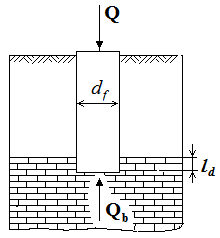
Q вертикальная нагрузка на сваю; Qb - вертикальная нагрузка, воспринимаемая пятой сваи, Q = Qb
Рисунок 7.1 - Опирание сваи на скальный грунт
Значение фактора заглубления f d d l 0,4 1 + принимается не более 3.
Для свай-оболочек, равномерно опираемых на поверхность невыветрелого скального грунта, прикрытого слоем нескальных неразмываемых грунтов толщиной не менее трех диаметров сваи-оболочки расчетное сопротивление скального грунта R определяется по формуле (7.8), принимая фактор заглубления f d d l 0,4 1 + равным единице.
Примечание -При наличии в основании набивных, буровых свай и свай-оболочек выветрелых, а также размягчаемых скальных грунтов их предел прочности на одноосное сжатие следует принимать по результатам испытаний штампами или по результатам испытаний свай и свай-оболочек статической нагрузкой.
Висячие забивные, вдавливаемые всех видов и железобетонные сваиоболочки, погружаемые без выемки грунта (забивные сваи трения)
где γ c -коэффициент условий работы сваи в грунте, принимаемый равным 1.
Примечание - Коэффициент условий работы γ c в формулах (7.9) и (7.12) следует принимать: для нормальных промежуточных опор линий электропередачи 1,2, а в остальных случаях 1,0;
- R расчетное сопротивление грунта под нижним концом сваи, кПа, принимаемое по таблице 7.2;
- A площадь опирания на грунт сваи, м² , принимаемая по площади поперечного сечения сваи брутто или по площади поперечного сечения камуфлетного уширения по его наибольшему диаметру, или по площади сваи-оболочки нетто;
- u наружный периметр поперечного сечения ствола сваи, м;
- f i -расчетное сопротивление i -го слоя грунта основания на боковой поверхности сваи, кПа, принимаемое по таблице 7.3;
- hi -толщина i -го слоя грунта, соприкасающегося с боковой поверхностью сваи, м;
- γ R,R , γ R,f -коэффициенты условий работы грунта соответственно под нижним концом и на боковой поверхности сваи, учитывающие влияние способа погружения сваи на расчетные сопротивления грунта и принимаемые по таблице 7.4.
В формуле (7.9) следует суммировать сопротивления грунта по всем его слоям, пройденным сваей, за исключением случаев, когда проектом предусматривается планировка территории срезкой или возможен размыв грунта. В этих случаях следует суммировать сопротивления всех слоев грунта, расположенных соответственно ниже уровня планировки (срезки) и дна водоема после его местного размыва при расчетном паводке.
Примечания
1 Несущую способность забивных булавовидных свай следует определять по формуле (7.9), при этом за периметр и на участке ствола следует принимать периметр поперечного сечения ствола сваи, на участке уширения -периметр поперечного сечения уширения. Расчетное сопротивление f i грунта на боковой поверхности таких свай на участке уширения, а в песках и на участке ствола следует принимать таким же, как для свай без уширения; в глинистых грунтах сопротивление f i на участке ствола, расположенного выше уширения, следует принимать равным нулю.
2 Расчетные сопротивления грунтов R и f i в формуле (7.9) для лессовых грунтов при глубине погружения свай более 5 м следует принимать по значениям, указанным в таблицах 7.2 и 7.3 для глубины 5 м. Кроме того, для этих грунтов в случае возможности их замачивания расчетные сопротивления R и f i , указанные в таблицах 7.2 и 7.3, следует принимать при показателе текучести, соответствующем полному их водонасыщению.
Таблица 7.2
| Глубина | Расчетные сопротивления R , кПа, под нижним концом забивных и вдавливаемых свай и свай-оболочек, погружаемых без выемки грунта | Расчетные сопротивления R , кПа, под нижним концом забивных и вдавливаемых свай и свай-оболочек, погружаемых без выемки грунта | Расчетные сопротивления R , кПа, под нижним концом забивных и вдавливаемых свай и свай-оболочек, погружаемых без выемки грунта | Расчетные сопротивления R , кПа, под нижним концом забивных и вдавливаемых свай и свай-оболочек, погружаемых без выемки грунта | Расчетные сопротивления R , кПа, под нижним концом забивных и вдавливаемых свай и свай-оболочек, погружаемых без выемки грунта | Расчетные сопротивления R , кПа, под нижним концом забивных и вдавливаемых свай и свай-оболочек, погружаемых без выемки грунта | Расчетные сопротивления R , кПа, под нижним концом забивных и вдавливаемых свай и свай-оболочек, погружаемых без выемки грунта |
|---|---|---|---|---|---|---|---|
| погружения | песков средней плотности | песков средней плотности | песков средней плотности | песков средней плотности | песков средней плотности | песков средней плотности | песков средней плотности |
| нижнего конца сваи, | гравелистых | крупных | - | средней крупности | мелких | пылеватых | - |
| м | глинистых грунтов при показателе текучести I L , равном | глинистых грунтов при показателе текучести I L , равном | глинистых грунтов при показателе текучести I L , равном | глинистых грунтов при показателе текучести I L , равном | глинистых грунтов при показателе текучести I L , равном | глинистых грунтов при показателе текучести I L , равном | глинистых грунтов при показателе текучести I L , равном |
| 0 | 0,1 | 0,2 | 0,3 | 0,4 | 0,5 | 0,6 | |
| 3 | 7500 | 6600 4000 | 3000 | 3100 2000 | 2000 1200 | 1100 | 600 |
| 4 | 8300 | 6800 5100 | 3800 | 3200 2500 | 2100 1600 | 1250 | 700 |
| 5 | 8800 | 7000 6200 | 4000 | 3400 2800 | 2200 2000 | 1300 | 800 |
| 7 | 9700 | 7300 6900 | 4300 | 3700 3300 | 2400 2200 | 1400 | 850 |
| 10 | 10500 | 7700 7300 | 5000 | 4000 3500 | 2600 2400 | 1500 | 900 |
| 15 | 11700 | 8200 7500 | 5600 | 4400 4000 | 2900 | 1650 | 1000 |
| 20 | 12600 | 8500 | 6200 | 4800 4500 | 3200 | 1800 | 1100 |
| 25 | 13400 | 9000 | 6800 | 5200 | 3500 | 1950 | 1200 |
|---|---|---|---|---|---|---|---|
| 30 | 14200 | 9500 | 7400 | 5600 | 3800 | 2100 | 1300 |
| 35 | 15000 | 10000 | 8000 | 6000 | 4100 | 2250 | 1400 |
| 40 | 15800 | 10500 | 8600 | 6400 | 4400 | 2400 | 1500 |
Примечания
- 1 Над чертой даны значения R для песков, под чертой - для глинистых грунтов.
- 2 В настоящей таблице и таблице 7.3 глубину погружения нижнего конца сваи и среднюю глубину расположения слоя грунта при планировке территории срезкой, подсыпкой, намывом до 3 м следует принимать от уровня природного рельефа, а при срезке, подсыпке, намыве от 3 м - от условной отметки, расположенной соответственно на 3 м выше уровня срезки или на 3 м ниже уровня подсыпки.
Глубину погружения нижнего конца сваи и среднюю глубину расположения слоя грунта в водоеме следует принимать от уровня дна после общего размыва расчетным паводком, на болотах - от уровня дна болота (кроме наличия в геологических разрезах погребенного торфа) .
В случаях, когда слежавшиеся насыпные грунты на геологическом разрезе расположены над торфом, они участвуют в пригрузе коренных грунтов, а следовательно значения hi следует принимать от уровня верха насыпи.
При проектировании путепроводов через выемки глубиной до 6 м для свай, забиваемых молотами без подмыва или устройства лидерных скважин, глубину погружения в грунт нижнего конца сваи следует принимать от уровня природного рельефа в месте сооружения фундамента. Для выемок глубиной более 6 м глубину погружения свай следует принимать как для выемок глубиной 6 м.
- 3 Для промежуточных глубин погружения свай и промежуточных значений показателя текучести IL глинистых грунтов значения R и f i в настоящей таблице и таблице 7.3 определяют интерполяцией.
- 4 Для плотных песков, плотность которых определена по данным статического зондирования, значения R по настоящей таблице для свай, погруженных без использования подмыва или лидерных скважин, следует увеличивать на 100 % - для песков крупных и средней крупности и на 130 % - для песков мелких и пылеватых. При определении плотности грунта по данным других видов инженерных изысканий и отсутствии данных статического зондирования для плотных песков значения R по настоящей таблице следует увеличивать на 60 % - для песков крупных и средней крупности и на 75 % для песков мелких и пылеватых, но не более чем до 20 000 кПа.
- 5 Значения расчетных сопротивлений R по настоящей таблице допускается использовать при условии, если заглубление свай в неразмываемый и несрезаемый грунт составляет не менее, м:
- 4,0 - для мостов и гидротехнических сооружений;
- 3,0 - для прочих сооружений.
- 6 Значения расчетного сопротивления R под нижним концом забивных свай сечением 0,15 0,15 м и менее, используемых в качестве фундаментов под внутренние перегородки одноэтажных производственных зданий, допускается увеличивать на 20 %.
- 7 Для супесей при числе пластичности I p ≤ 4 и коэффициенте пористости e < 0,8 расчетные сопротивления R и f i следует определять как для пылеватых песков средней плотности.
- 8 При расчетах показатель текучести грунтов следует принимать применительно к прогнозируемому их состоянию в период эксплуатации проектируемых сооружений.
- 9 В фундаментах опор воздушных линий электропередачи в фундаментах нормальных опор расчетные значения f i для глинистых грунтов при их показателе текучести IL ≥ 0,3 следует увеличивать на 25 %.
Таблица 7.3
| Средняя глубина расположения | Расчетные сопротивления f i , кПа, на боковой поверхности забивных и вдавливаемых свай и свай-оболочек | Расчетные сопротивления f i , кПа, на боковой поверхности забивных и вдавливаемых свай и свай-оболочек | Расчетные сопротивления f i , кПа, на боковой поверхности забивных и вдавливаемых свай и свай-оболочек | Расчетные сопротивления f i , кПа, на боковой поверхности забивных и вдавливаемых свай и свай-оболочек | Расчетные сопротивления f i , кПа, на боковой поверхности забивных и вдавливаемых свай и свай-оболочек | Расчетные сопротивления f i , кПа, на боковой поверхности забивных и вдавливаемых свай и свай-оболочек | Расчетные сопротивления f i , кПа, на боковой поверхности забивных и вдавливаемых свай и свай-оболочек | Расчетные сопротивления f i , кПа, на боковой поверхности забивных и вдавливаемых свай и свай-оболочек | Расчетные сопротивления f i , кПа, на боковой поверхности забивных и вдавливаемых свай и свай-оболочек |
|---|---|---|---|---|---|---|---|---|---|
| Средняя глубина расположения | песков средней плотности | песков средней плотности | песков средней плотности | песков средней плотности | песков средней плотности | песков средней плотности | песков средней плотности | песков средней плотности | песков средней плотности |
| грунта, м | крупных и средней крупности | мелких | пылеватых | - | - | - | - | - | - |
| Средняя глубина расположения | глинистых грунтов при показателе текучести I L , равном | глинистых грунтов при показателе текучести I L , равном | глинистых грунтов при показателе текучести I L , равном | глинистых грунтов при показателе текучести I L , равном | глинистых грунтов при показателе текучести I L , равном | глинистых грунтов при показателе текучести I L , равном | глинистых грунтов при показателе текучести I L , равном | глинистых грунтов при показателе текучести I L , равном | глинистых грунтов при показателе текучести I L , равном |
| Средняя глубина расположения | 0,2 | 0,3 | 0,4 | 0,5 | 0,6 | 0,7 | 0,8 | 0,9 | 1,0 |
| 1 | 35 | 23 | 15 | 12 | 8 | 4 | 4 | 3 | 2 |
| 2 | 42 | 30 | 21 | 17 | 12 | 7 | 5 | 4 | 4 |
| 3 | 48 | 35 | 25 | 20 | 14 | 8 | 7 | 6 | 5 |
| 4 | 53 | 38 | 27 | 22 | 16 | 9 | 8 | 7 | 5 |
| 5 | 56 | 40 | 29 | 24 | 17 | 10 | 8 | 7 | 6 |
| 6 | 58 | 42 | 31 | 25 | 18 | 10 | 8 | 7 | 6 |
| 8 | 62 | 44 | 33 | 26 | 19 | 10 | 8 | 7 | 6 |
| 10 | 65 | 46 | 34 | 27 | 19 | 10 | 8 | 7 | 6 |
| 15 | 72 | 51 | 38 | 28 | 20 | 11 | 8 | 7 | 6 |
| 20 | 79 | 56 | 41 | 30 | 20 | 12 | 8 | 7 | 6 |
| 25 | 86 | 61 | 44 | 32 | 20 | 12 | 8 | 7 | 6 |
| 30 | 93 | 66 | 47 | 34 | 21 | 12 | 9 | 8 | 7 |
| 35 | 100 | 70 | 50 | 36 | 22 | 13 | 9 | 8 | 7 |
| 40 | 107 | 74 | 53 | 38 | 23 | 14 | 9 | 8 | 7 |
Примечания
- 1 При определении расчетного сопротивления грунта на боковой поверхности свай f i следует учитывать требования, изложенные в примечаниях 2, 3 и 8 к таблице 7.2.
- 2 При определении расчетных сопротивлений грунтов на боковой поверхности свай f i пласты грунтов следует расчленять на однородные слои толщиной не более 2 м.
- 3 Значения расчетного сопротивления плотных песков на боковой поверхности свай f i следует увеличивать на 30 % по сравнению со значениями, приведенными в настоящей таблице.
- 4 Расчетные сопротивления супесей и суглинков с коэффициентом пористости e < 0,5 и глин с коэффициентом пористости e < 0,6 следует увеличивать на 15 % по сравнению со значениями, приведенными в настоящей таблице, при любых значениях показателя текучести.
Таблица 7.4
| Способ погружения забивных и вдавливаемых свай и свай- | Коэффициент условий работы грунта при расчете несущей способности свай | Коэффициент условий работы грунта при расчете несущей способности свай |
|---|---|---|
| оболочек, погружаемых без выемки грунта, и виды грунтов | под нижним концом γ R,R | на боковой поверхности γ R,f |
| 1 Погружение сплошных и полых с закрытым нижним концом свай механическими (подвесными), паровоздушными и дизельными молотами | 1,0 | 1,0 |
| 2 Погружение забивкой и вдавливанием в предварительно пробуренные лидерные скважины с заглублением концов свай не менее 1 м ниже забоя скважины при ее диаметре: а) равном стороне квадратной сваи или диаметру сваи круглого сечения | 1,0 | 0,5 |
| б) на 0,05 м менее стороны квадратной сваи или диаметра сваи круглого сечения | 1,0 | 0,6 |
| в) на 0,15 м менее стороны квадратной или диаметра сваи круглого сечения | 1,0 | 1,0 |
| 3 Погружение с подмывом в песчаные грунты при условии добивки свай на последнем этапе погружения без применения подмыва на 1 м и более вибропогружение и | 1,0 | 0,9 |
| 4 Вибропогружение свай-оболочек, вибровдавливание свай в грунты: | ||
| а) пески средней плотности: крупные и средней крупности | 1,2 | 1,0 |
| мелкие | 1,1 | 1,0 |
| пылеватые | 1,0 | 1,0 |
| б) глинистые с показателем текучести I L = 0,5: | ||
| супеси | 0,9 | 0,9 |
| суглинки | 0,8 | 0,9 |
| глины | 0,7 | 0,9 |
| в) глинистые с показателем текучести I L ≤ 0 | 1,0 | 1,0 |
| 5 Погружение молотами полых железобетонных свай с открытым нижним концом: | ||
| а) при диаметре полости сваи менее 0,4 м | 1,0 | 1,0 |
| б) то же, от 0,4 до 0,8 м | 0,7 | 1,0 |
| 6 Погружение любым способом полых свай круглого сечения с закрытым нижним концом на глубину 10 м и более с последующим устройством в нижнем конце свай камуфлетного уширения в песчаных грунтах средней плотности и в глинистых грунтах с показателем текучести I L ≤ 0,5 при диаметре уширения, равном: | ||
| а) 1,0 м независимо от указанных видов грунта | 0,9 | 1,0 |
| б) 1,5 м в песках и супесях | 0,8 | 1,0 |
| в) 1,5 м в суглинках и глинах | 0,7 | 1,0 |
| 7 Погружение вдавливанием свай: | 1,1 | 1,0 |
|---|---|---|
| а) в пески крупные, средней крупности и мелкие б) в пески пылеватые | 1,1 | 0,8 |
| в) в глинистые грунты с показателем текучести I L < 0,5 | 1,1 | 1,0 |
| г) то же, I L ≥ 0,5 | 1,0 | 1,0 |
Примечание - Коэффициенты γ R,R и γ R,f по пункту 4 настоящей таблицы для глинистых грунтов с показателем текучести 0,5 > IL > 0 определяют интерполяцией.
где c , R , A , hi , f i , γ R,R , γ R,f - см. формулу (7.9); ui - наружный периметр i -го сечения сваи, м; u 0, i - сумма размеров сторон i -го поперечного сечения сваи, м, имеющих наклон к оси сваи; i p - наклон боковых граней сваи, дол. ед.;
Ei - модуль деформации слоя грунта, окружающего боковую поверхность сваи, кПа, определяемый по результатам компрессионных испытаний; ki коэффициент, зависящий от вида грунта и принимаемый по таблице 7.5; ζ r -реологический коэффициент, принимаемый равным 0,8.
Примечания
1 При ромбовидных сваях суммирование сопротивлений грунта на боковой поверхности участков с обратным наклоном в формуле (7.10) не производится.
2 Расчет пирамидальных свай с наклоном боковых граней i p > 0,025 допускается выполнять в соответствии с приложением В.
Таблица 7.5
| Вид грунта | Коэффициент k i |
|---|---|
| Пески и супеси | 0,5 |
| Суглинки | 0,6 |
| Глины: | |
| при I p = 18 | 0,7 |
| при I p = 25 | 0,9 |
Примечание - Для глин с числом пластичности 18 < I p < 25 значения коэффициента ki определяют интерполяцией.
где u , γ R,f , f i , hi - см. формулу (7.9); γ c - коэффициент условий работы сваи в грунте (для свай, погружаемых в грунт на глубину менее 4 м, γ c = 0,6, на глубину 4 м и более γ c = 0,8 - для всех сооружений.
Примечания
1 В формулах (7.11) и (7.16) следует принимать для нормальных промежуточных опор линий электропередачи γ c =1,2, для анкерных и угловых опор γ c =1,0, если удерживающая сила веса свай и ростверка равна расчетной выдергивающей нагрузке γ c =1,0, если удерживающая сила составляет 65 % и менее расчетной выдергивающей нагрузки γ c =0,6, а в остальных случаях по интерполяции.
- 2 В фундаментах опор мостов не допускается работа свай на выдергивание при основном сочетании нагрузок, включающем только постоянные нагрузки и воздействия.
𝐹
- где k -эмпирический коэффициент, определенный на основании сопоставления результатов значений несущей способности свай по ГОСТ 5686 и максимального усилия вдавливания при погружении свай. Допускается принимать величину k равной 1,6 для песков пылеватых, мелких и средней плотности и 2,0 - для плотных песков, для пылевато-глинистых грунтов с Е более 12 МПа - 1,3 и 1,1 для грунтов с Е менее 12 МПа.
Примечания
1 Допускается корректировка k , исходя из местных условий, с учетом имеющихся архивных данных по погружению свай.
- 2 При погружении свай в грунты, меняющие свои свойства при замачивании, величина Fd должна быть определена для состояния грунта, при котором производится погружение свай.
Висячие набивные, буровые и сваи-оболочки, погружаемые с выемкой грунта и заполняемые бетоном (сваи трения)
- где γ c - коэффициент условий работы сваи; в случае опирания ее на глинистые грунты со степенью влажности Sr < 0,85 и на лессовые грунты - γ c = 0,8, в остальных случаях - γ c = 1;
- γ R,R - коэффициент надежности по сопротивлению грунта под нижним концом сваи; γ R,R = 1 во всех случаях, за исключением свай с камуфлетными уширениями и буроинъекционных свай по перечислению е) 6.5, для которых этот коэффициент следует принимать равным 1,3, и свай с уширением, устраиваемых путем механического разбуривания грунта, бетонируемых насухо γ R,R = 0,5 и бетонируемых подводным способом, для которых γ R,R = 0,3;
- R - расчетное сопротивление грунта под нижним концом сваи, кПа, принимаемое по 7.2.11; для набивной сваи, изготавливаемой по технологии, указанной в перечислениях а), б) 6.4 - по таблице 7.2;
- A
- площадь опирания сваи, м² , принимаемая равной: для набивных и буровых свай без уширения - площади поперечного сечения сваи; для набивных и буровых свай с уширением - площади поперечного сечения уширения в месте наибольшего его диаметра; для свай-оболочек, заполняемых бетоном, - площади поперечного
- сечения оболочки брутто; u - периметр поперечного сечения ствола сваи, м;
- γ R,f - коэффициент условий работы грунта на боковой поверхности сваи, зависящий от способа образования скважины и условий бетонирования и принимаемый по таблице 7.6;
- f i - расчетное сопротивление i -го слоя грунта на боковой поверхности ствола сваи, кПа, принимаемое по таблице 7.3; hi - см. формулу (7.9).
Примечания
1 Сопротивление песков на боковой поверхности сваи следует учитывать на участке, расположенном на 1,5 d 0 выше уширения, как это показано на рисунке 7.2. Сопротивление глинистых грунтов допускается учитывать по всей длине ствола.
2 Периметр поперечного сечения ствола u для буроинъекционных свай следует принимать равным периметру скважины, пробуриваемой при их изготовлении.
Рисунок 7.2 - Схема к расчету сопротивления на боковой поверхности ствола сваи с уширением в песчаном грунте
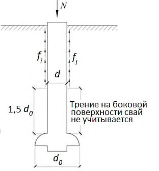
Площадь опирания буроинъекционной сваи следует принимать по площади поперечного сечения уширения, а периметр поперечного сечения ствола - исходя из среднего значения диаметров dji сваи, которые следует определять по объему бетонной смеси, израсходованной на заполнение j -го разрядно-импульсного уширения в i -м слое грунта. Заданные в проекте уширения сваи уточняют при изготовлении опытных свай в конкретных грунтовых условиях.
Примечание - Для свай с уширением, устраиваемых путем механического разбуривания грунта, при наличии данных видеообследования скважин или результатов обследования скважин, указывающих на отсутствие бурового шлама на уровнях подошвы уширения скважин и дна приямка ниже уширения, допускается принимать: γ R,R = 1 - при бетонировании скважин насухо и γR,R = 0,9 - при бетонировании скважин подводным способом.
Таблица 7.6
| Тип свай и способы их устройства | Коэффициент условий работы сваи γ R,f в | Коэффициент условий работы сваи γ R,f в | Коэффициент условий работы сваи γ R,f в | Коэффициент условий работы сваи γ R,f в |
|---|---|---|---|---|
| песках | супесях | суглинках | глинах | |
| 1 Набивные, а также сваи, устраиваемые с вытеснением грунта по перечислению а) 6.4 при погружении инвентарной трубы с теряемым наконечником или бетонной пробкой | 1 | 1 | 1 | 0,9 |
| 2 Набивные виброштампованные | 0,9 | 0,9 | 0,9 | 0,9 |
| 3 Буровые, в том числе с уширением, бетонируемые: а) при отсутствии воды в скважине (сухим способом) и при использовании обсадных инвентарных труб, а также при выполнении их методом непрерывно перемещающегося шнека (НПШ) | 0,7 | 0,7 | 0,7 | 0,6 |
| б) под водой или под глинистым раствором в) жесткими бетонными смесями, укладываемыми с помощью глубинной вибрации (сухим способом) | 0,6 | 0,6 | 0,6 | 0,6 |
|---|---|---|---|---|
| 0,8 | 0,8 | 0,8 | 0,7 | |
| 4 Бареты по перечислению в) 6.5 | 0,6 | 0,6 | 0,6 | 0,6 |
| 5 Сваи-оболочки, погружаемые вибрированием с выемкой грунта | 1,0 | 0,9 | 0,7 | 0,6 |
| 6 Сваи-столбы | 0,7 | 0,7 | 0,7 | 0,6 |
| 7 Буроинъекционные, изготовляемые под защитой обсадных труб или бентонитового раствора с опрессовкой давлением 200-400 кПа (2-4 атм), а также при выполнении их с инъекцией бетонной смеси через колонну проходных полых шнеков | 0,9 | 0,8 | 0,8 | 0,8 |
| 8 Буроинъекционные сваи , устраиваемые с использованием разрядно-импульсной технологии по перечислению е) 6.5 | 1,3 | 1,3 | 1,1 | 1,1 |
- а) для крупнообломочных грунтов с песчаным заполнителем и песков в основании набивной и буровой свай с уширением и без уширения, сваиоболочки, погружаемой с полным удалением грунтового ядра, - по формуле (7.14), а сваи-оболочки, погружаемой с сохранением грунтового ядра из указанных грунтов на высоту 0,5 м, - по формуле (7.15):
где α1, α2, α3, α4 - безразмерные коэффициенты, принимаемые по таблице 7.7 в зависимости от расчетного значения угла внутреннего трения грунта основания;
- γ ' 1 -расчетное значение удельного веса грунта, кН/м³ , в основании сваи (при водонасыщенных грунтах с учетом взвешивающего действия воды);
- γ1 - осредненное (по слоям) расчетное значение удельного веса грунтов, кН/м³ , расположенных выше нижнего конца сваи (при водонасыщенных грунтах с учетом взвешивающего действия воды);
- d - диаметр, м, набивной и буровой свай, диаметр уширения (для сваи с уширением), сваи-оболочки или диаметр скважины для сваи-столба, омоноличенного в грунте цементнопесчаным раствором;
- h - глубина заложения, м, нижнего конца сваи или ее уширения, отсчитываемая от природного рельефа или уровня планировки (при планировке срезкой), для опор мостов - от дна водоема после его общего размыва при расчетном паводке;
- б) для глинистых грунтов в основании - по таблице 7.8.
Примечания
1 Требования настоящего пункта относятся к случаям, когда обеспечивается заглубление свай в грунт, принятый за основание их нижних концов не менее чем на 2 м.
- 2 Значения R , рассчитанные по формулам (7.14) и (7.15), не следует принимать выше значений, приведенных в таблице 7.2 для забивных свай той же длины и в тех же грунтовых условиях.
Таблица 7.7
| Коэффициент | Расчетные значения угла внутреннего трения грунта φ | Расчетные значения угла внутреннего трения грунта φ | Расчетные значения угла внутреннего трения грунта φ | Расчетные значения угла внутреннего трения грунта φ | Расчетные значения угла внутреннего трения грунта φ | Расчетные значения угла внутреннего трения грунта φ | Расчетные значения угла внутреннего трения грунта φ | Расчетные значения угла внутреннего трения грунта φ | Расчетные значения угла внутреннего трения грунта φ |
|---|---|---|---|---|---|---|---|---|---|
| 23° | 25° | 27° | 29° | 31° | 33° | 35° | 37° | 39° | |
| α 1 | 9,5 | 12,6 | 17,3 | 24,4 | 34,6 | 48,6 | 71,3 | 108,0 | 163,0 |
| α 2 | 18,6 | 24,8 | 32,8 | 45,5 | 64,0 | 87,6 | 127,0 | 185,0 | 260,0 |
| α 3 при h / d , равном: | |||||||||
| 4,0 | 0,78 | 0,79 | 0,80 | 0,82 | 0,84 | 0,85 | 0,85 | 0,85 | 0,87 |
| 5,0 | 0,75 | 0,76 | 0,77 | 0,79 | 0,81 | 0,82 | 0,83 | 0,84 | 0,85 |
| 7,5 | 0,68 | 0,70 | 0,71 | 0,74 | 0,76 | 0,78 | 0,80 | 0,82 | 0,84 |
| 10,0 | 0,62 | 0,65 | 0,67 | 0,70 | 0,73 | 0,75 | 0,77 | 0,79 | 0,81 |
| 12,5 | 0,58 | 0,61 | 0,63 | 0,67 | 0,70 | 0,73 | 0,75 | 0,78 | 0,80 |
| 15,0 | 0,55 | 0,58 | 0,61 | 0,65 | 0,68 | 0,71 | 0,73 | 0,76 | 0,79 |
| 17,5 | 0,51 | 0,55 | 0,58 | 0,62 | 0,66 | 0,69 | 0,72 | 0,75 | 0,78 |
| 20,0 | 0,49 | 0,53 | 0,57 | 0,61 | 0,65 | 0,68 | 0,72 | 0,75 | 0,78 |
| 22,5 | 0,46 | 0,51 | 0,55 | 0,60 | 0,64 | 0,67 | 0,71 | 0,74 | 0,77 |
| 25,0 и более | 0,44 | 0,49 | 0,54 | 0,59 | 0,63 | 0,67 | 0,70 | 0,74 | 0,77 |
| α 4 при d , равном, м: | |||||||||
| 0,8 и менее | 0,34 | 0,31 | 0,29 | 0,27 | 0,26 | 0,25 | 0,24 | 0,23 | 0,22 |
| 4,0 | 0,25 | 0,24 | 0,23 | 0,22 | 0,21 | 0,20 | 0,19 | 0,18 | 0,17 |
Примечания
1 Расчетные значения угла внутреннего трения φ следует принимать φ = φI.
2 Для промежуточных значений φI, h / d и d значения коэффициентов α1, α2, α3, и α4 определяют интерполяцией.
Таблица 7.8
| Глубина заложения нижнего конца сваи h , | Расчетное сопротивление R , кПа, под нижним концом набивных и буровых свай и свай-оболочек, погружаемых с выемкой грунта и заполняемых бетоном, при глинистых грунтах, за исключением просадочных, с показателем текучести I L , равным | Расчетное сопротивление R , кПа, под нижним концом набивных и буровых свай и свай-оболочек, погружаемых с выемкой грунта и заполняемых бетоном, при глинистых грунтах, за исключением просадочных, с показателем текучести I L , равным | Расчетное сопротивление R , кПа, под нижним концом набивных и буровых свай и свай-оболочек, погружаемых с выемкой грунта и заполняемых бетоном, при глинистых грунтах, за исключением просадочных, с показателем текучести I L , равным | Расчетное сопротивление R , кПа, под нижним концом набивных и буровых свай и свай-оболочек, погружаемых с выемкой грунта и заполняемых бетоном, при глинистых грунтах, за исключением просадочных, с показателем текучести I L , равным | Расчетное сопротивление R , кПа, под нижним концом набивных и буровых свай и свай-оболочек, погружаемых с выемкой грунта и заполняемых бетоном, при глинистых грунтах, за исключением просадочных, с показателем текучести I L , равным | Расчетное сопротивление R , кПа, под нижним концом набивных и буровых свай и свай-оболочек, погружаемых с выемкой грунта и заполняемых бетоном, при глинистых грунтах, за исключением просадочных, с показателем текучести I L , равным | Расчетное сопротивление R , кПа, под нижним концом набивных и буровых свай и свай-оболочек, погружаемых с выемкой грунта и заполняемых бетоном, при глинистых грунтах, за исключением просадочных, с показателем текучести I L , равным |
|---|---|---|---|---|---|---|---|
| м | 0,0 | 0,1 | 0,2 | 0,3 | 0,4 | 0,5 | 0,6 |
| 3 | 850 | 750 | 650 | 500 | 400 | 300 | 250 |
| 5 | 1000 | 850 | 750 | 650 | 500 | 400 | 350 |
| 7 | 1150 | 1000 | 850 | 750 | 600 | 500 | 450 |
| 10 | 1350 | 1200 | 1050 | 950 | 800 | 700 | 600 |
| 12 | 1550 | 1400 | 1250 | 1100 | 950 | 800 | 700 |
| 15 | 1800 | 1650 | 1500 | 1300 | 1100 | 1000 | 800 |
| 18 | 2100 | 1900 | 1700 | 1500 | 1300 | 1150 | 950 |
| 20 | 2300 | 2100 | 1900 | 1650 | 1450 | 1250 | 1050 |
| 30 | 3300 | 3000 | 2600 | 2300 | 2000 | - | - |
| 40 | 4500 | 4000 | 3500 | 3000 | 2500 | - | - |
Примечания
1 В настоящей таблице глубину погружения нижнего конца сваи и среднюю глубину расположения слоя грунта при планировке территории срезкой, подсыпкой, намывом до 3 м следует принимать от уровня природного рельефа, а при срезке, подсыпке, намыве от 3 м -от условной отметки, расположенной соответственно на 3 м выше уровня срезки или на 3 м ниже уровня подсыпки.
Глубину погружения нижнего конца сваи и среднюю глубину расположения слоя грунта в водоеме следует принимать от уровня дна после общего размыва расчетным паводком, на болотах - от уровня дна болота.
2 Для промежуточных глубин погружения свай и промежуточных значений показателя текучести IL глинистых грунтов значения R в настоящей таблице определяют интерполяцией.
- 3 При расчетах показатель текучести грунтов следует принимать применительно к прогнозируемому их состоянию в период эксплуатации проектируемых сооружений.
- 4 Для свайных фундаментов опор мостов приведенные значения следует понижать при коэффициенте пористости грунта е > 0,6, при этом коэффициент понижения m следует определять интерполяцией между значениями m = 1,0 при e = 0,6 и m = 0,6 при e = 1,1.
- 5 Расчетное сопротивление R для крупнообломочных грунтов с глинистым заполнителем определяется по результатам раздельных испытаний грунта на боковой поверхности натурной сваи и под ее нижним концом.
- см. формулу (7.11); где γ c u , γ R,f , f i , hi - см. формулу (7.13).
Винтовые сваи
где γ c - коэффициент условий работы сваи, зависящий от вида нагрузки, действующей на сваю, и грунтовых условий и определяемый по таблице 7.9; γ R,R , γ R,f -коэффициенты условий работы грунта соответственно под нижним концом и на боковой поверхности сваи, учитывающие влияние способа погружения сваи на расчетные сопротивления грунта. Следует принимать γ R,R = 1, а γ R,f = 1 во всех случаях, кроме устройства лидерных скважин, для которых следует руководствоваться пунктом 2 таблицы 7.4;
Fd0 - несущая способность лопасти, кН;
Fdf - несущая способность ствола, кН.
Несущая способность лопасти винтовой сваи определяется по формуле
где 1 , 2 - безразмерные коэффициенты, принимаемые по таблице 7.10 в зависимости от расчетного значения угла внутреннего трения грунта в рабочей зоне φI (под рабочей зоной понимается прилегающий к лопасти слой грунта толщиной, равной d ); c 1 - расчетное значение удельного сцепления грунта в рабочей зоне, кПа; γ1 -осредненное расчетное значение удельного веса грунтов, залегающих выше лопасти сваи (при водонасыщенных грунтах с учетом взвешивающего действия воды), кН/м³ ;
- h 1 - глубина залегания лопасти сваи от природного рельефа, а при планировке территории срезкой -от уровня планировки, м;
- A - проекция площади лопасти, м² , считая по наружному диаметру, при работе винтовой сваи на сжимающую нагрузку, и проекция рабочей площади лопасти, т. е. за вычетом площади сечения ствола, при работе винтовой сваи на выдергивающую нагрузку.
Несущая способность ствола винтовой сваи определяется по формуле
где u - периметр поперечного сечения ствола сваи, м;
- f i - расчетное сопротивление грунта на боковой поверхности ствола винтовой сваи, кПа, принимаемое по таблице 7.3 (осредненное значение для всех слоев в пределах глубины погружения сваи); h - длина ствола сваи, погруженная в грунт, м; d - диаметр лопасти сваи, м.
Примечания
1 При определении несущей способности винтовых свай при действии вдавливающих нагрузок характеристики грунтов в таблице 7.10 относятся к грунтам, залегающим под лопастью, а при работе на выдергивающие нагрузки - над лопастью сваи.
2 Глубина заложения лопасти назначается от уровня планировки или дна болота (при устройстве подсыпки) должна быть не менее 5 d при глинистых грунтах и не менее 6 d - при песках (где d - диаметр лопасти).
Таблица 7.9
| Вид грунта | Коэффициент условий работы винтовых свай γ c при нагрузках | Коэффициент условий работы винтовых свай γ c при нагрузках | Коэффициент условий работы винтовых свай γ c при нагрузках |
|---|---|---|---|
| сжимающих | выдергивающих | знакопеременных | |
| 1 Глины и суглинки: а) твердые, полутвердые и тугопластичные | 0,8 | 0,7 | 0,7 |
| б) мягкопластичные | 0,8 | 0,7 | 0,6 |
| в) текучепластичные | 0,7 | 0,6 | 0,4 |
| 2 Пески и супеси: а) пески маловлажные и супеси твердые | 0,8 | 0,7 | 0,5 |
| б) пески влажные и супеси пластичные в) пески водонасыщенные и супеси | 0,7 | 0,6 | 0,4 |
| текучие | 0,6 | 0,5 | 0,3 |
Примечание - При определении коэффициентов условий работы γ c для свай, работающих только на сжимающие нагрузки и силы пучения, значения коэффициента γ c следует принимать по графе «сжимающих», если по величине силы пучения не превышают 15 % от сжимающих нагрузок и по графе «знакопеременных» в иных случаях.
Таблица 7.10
| Расчетное значение | Коэффициенты | Коэффициенты | Расчетное значение угла внутреннего трения грунта в рабочей зоне φ I | Коэффициенты | Коэффициенты |
|---|---|---|---|---|---|
| внутреннего рабочей | α 1 | α 2 | Расчетное значение угла внутреннего трения грунта в рабочей зоне φ I | α 1 | α 2 |
| 13° | 7,8 | 2,8 | 24° | 18,0 | 9,2 |
| 15° | 8,4 | 3,3 | 26° | 23,1 | 12,3 |
| 16° | 9,4 | 3,8 | 28° | 29,5 | 16,5 |
| 18° | 10,1 | 4,5 | 30° | 38,0 | 22,5 |
| 20° | 12,1 | 5,5 | 32° | 48,4 | 31,0 |
| 22° | 15,0 | 7,0 | 34° | 64,9 | 44,4 |
Стальные трубчатые сваи
Стальные трубчатые сваи с открытым и закрытым концами с учетом сопротивления грунта под нижним торцом трубы сваи и сопротивления грунта по внешней боковой поверхности сваи.
Несущая способность свай из стальных труб, погружаемых с открытым нижним концом, работающих на вдавливающую нагрузку, должна определяться по результатам статических испытаний. Для назначения нагрузки при проведении статических испытаний стальных трубчатых свай, погружаемых с открытым концом, следует рассматривать два варианта работы сваи в предельном состоянии:
- а) с учетом сформированной грунтовой пробки, обусловленной сопротивлением грунта под нижним концом торца трубы (площадь нетто), площади грунтовой пробки (площадь брутто минус площадь нетто) и сопротивления грунта по внешней боковой поверхности сваи; б) с учетом сопротивления грунта под нижним торцом трубы сваи, без учета грунтовой пробки (площадь сечения нижнего конца сваи нетто) и сопротивления грунта по внешней и внутренней боковым поверхностям сваи.
Искомая величина несущей способности свай из стальных труб, погружаемых с открытым нижним концом, работающих на вдавливающую нагрузку, должна приниматься наименьшей из рассматриваемых вариантов.
Примечание - Определение несущей способности стальной трубчатой сваи с открытым нижним концом при опирании на скальные или слабодеформируемые грунты допускается только по результатам статических испытаний.
Комбинированные сваи
- для круглого сердечника диаметром d : D = 1,2…2,5 d ;
- для квадратного сердечника со стороной b : D = 1,5…3,0 b .
- инвентарного элемента без учета наличия грунтоцемента;
- по материалу бетонного или грунтоцементного элемента;
- по контакту инвентарного элемента и материалу бетонного или грунтоцементного элемента.
Примечание - Численное моделирование элементов, закрепленных по струйной или буросмесительной технологии, рекомендуется выполнять с использованием расчетных моделей - идеальной упруго-пластичной модели и модели, в основе которой заложен нелинейный критерий прочности на сдвиг, разработанной специально для скальных грунтов.
Учет отрицательного (негативного) трения грунта на боковой поверхности свай
- планировки территории подсыпкой толщиной более 1,0 м;
- загрузки пола складов полезной нагрузкой более 20 кН/м² ;
- загрузки пола около фундаментов полезной нагрузкой от оборудования более 100 кН/м² ;
- увеличения эффективных напряжений в грунте за счет снятия взвешивающего действия воды при понижении уровня подземных вод;
- незавершенной консолидации грунтов современных и техногенных отложений;
- уплотнения несвязных грунтов при динамических воздействиях;
- просадки грунтов при замачивании;
- при строительстве нового сооружения вблизи существующих.
Примечание - Отрицательные силы трения, возникающие в просадочных грунтах, следует учитывать в соответствии с разделом 9.
- а) при подсыпках высотой менее 2 м для грунтовой подсыпки и слоев торфа - равным нулю, для минеральных ненасыпных грунтов природного сложения - значениям по таблице 7.3 (рисунок 7.3, б );
- б) при подсыпках высотой от 2 до 5 м для грунтов, включая подсыпку, равным 0,4 значений, указанных в таблице 7.3, но со знаком «минус», а для торфа - минус 5 кПа (отрицательные силы трения) (рисунок 7.3, в );
- в) при подсыпках высотой более 5 м для грунтов, включая подсыпку, равным значениям, указанным в таблице 7.3, но со знаком «минус», а для торфа - минус 5 кПа (рисунок 7.3, г ).
Примечание - Осадку околосвайного грунта допускается определять методом послойного суммирования в соответствии с СП 22.13330 без учета наличия свай или путем проведения численных расчетов.
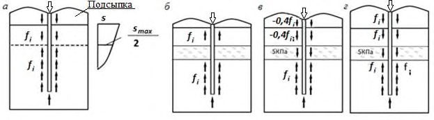
а - общий случай; б - наличие слабых прослоек и подсыпки высотой менее 2 м; в - наличие слабых прослоек и подсыпки высотой 2-5 м; г - наличие слабых прослоек и подсыпки высотой более 5 м
Рисунок 7.3 - Схема развития сил негативного трения
Если известны значения коэффициентов консолидации и модуля деформации торфов, залегающих в пределах длины погруженной части сваи, и возможно определение значения осадки основания от воздействия пригрузки территории для каждого слоя грунта, то при определении несущей способности сваи допускается учитывать силы сопротивления грунта с отрицательным знаком (отрицательные силы трения) не от уровня подошвы нижнего слоя торфа, а начиная от верхнего уровня слоя грунта, значение дополнительной осадки которого от пригрузки территории (определенной начиная с момента передачи на сваю расчетной нагрузки) составляет половину предельного значения осадки для проектируемого сооружения.
7.3Определение несущей способности свай по результатам полевых испытаний
- статические испытания свай и свай-штампов - до 1 % общего числа свай на объекте, но не менее трех для сооружений класса КС-2 и четырех для сооружений класса КС-3;
- динамические испытания свай - до 2 % общего числа свай на объекте, но не менее шести для сооружений класса КС-2 и девяти - для сооружений класса КС-3;
- испытания грунтов статическим зондированием - в соответствии с СП 446.1325800.
Примечания
1 Для сооружений класса КС-3 несущую способность свай допускается определять по результатам статических испытаний тензометрических свай, выполняемых по специально разработанной программе.
2 Для определения несущей способности свай мостовых сооружений классов КС-3 и КС-2 по результатам полевых испытаний число и тип испытаний следует назначать в соответствии с разделом 8 СП 46.13330.2012.
3 Несушая способность свай подтверждается одним или несколькими способами по выбору авторов проекта.
где γ c - коэффициент условий работы сваи; в случае вдавливающих или горизонтальных нагрузок γ c = 1; в случае выдергивающих нагрузок γ c принимают по 7.2.7;
- Fu , n -нормативное значение предельного сопротивления сваи, кН, определяемое в соответствии с 7.3.4 -7.3.7, а также 7.3.9 -7.3.11; γ c,g
1 - коэффициент надежности по грунту, принимаемый по 7.3.4.
Примечание - Результаты статических испытаний свай на горизонтальные нагрузки могут быть использованы для непосредственного определения расчетной нагрузки, допускаемой на сваю, если условия испытаний соответствуют действительным условиям работы сваи в фундаменте сооружения.
В случае если число свай, испытанных в одинаковых условиях, составляет шесть и более, Fu , n и γ c,g 1 следует определять на основании результатов статистической обработки частных значений предельных сопротивлений свай Fu , полученных по данным испытаний при значении доверительной вероятности α = 0,95. При этом для определения частных значений предельных сопротивлений следует руководствоваться 7.3.5 при вдавливающих, 7.3.6 - при выдергивающих и горизонтальных нагрузках и 7.3.7 - при динамических испытаниях.
Примечание - При обосновании допускается проведение испытания одной сваи в месте, с наиболее неблагоприятными условиями на участке строительства.
Во всех остальных случаях для фундаментов сооружений (кроме мостов и гидротехнических сооружений) за частное значение предельного сопротивления сваи Fu вдавливающей нагрузке следует принимать нагрузку, под воздействием которой испытуемая свая получает осадку, равную s, определяемую по формуле
где ζ - коэффициент перехода от предельного значения средней осадки фундамента сооружения su , mt к осадке сваи, полученной при статических испытаниях с условной стабилизацией (затуханием) осадки; su , mt - предельное значение средней осадки фундамента проектируемого сооружения, устанавливаемое по СП 22.13330 как для объекта нового строительства.
Примечание - Для реконструируемых сооружений значение s по формуле (7.21) допускается ограничивать значением максимальной осадки 𝑠 𝑎𝑑,𝑢 max по приложению Е СП 22.13330.2016.
Значение коэффициента ζ следует принимать равным 0,2 в случаях, когда испытание свай проводят при условной стабилизации, равной 0,1 мм за 1 ч, если под их нижними концами залегают песчаные или глинистые грунты с консистенцией от твердой до тугопластичной, а также за 2 ч, если под их нижними концами залегают глинистые грунты от мягкопластичной до текучей консистенции.
Если осадка, определенная по формуле (7.21), составляет более 40 мм, то за частное значение предельного сопротивления сваи Fu следует принимать нагрузку, соответствующую s = 40 мм.
Для мостов и гидротехнических сооружений за предельное сопротивление сваи Fu при вдавливающих нагрузках следует принимать нагрузку на одну ступень менее нагрузки, при которой вызывается: а) приращение осадки за одну ступень загружения (при общем значении осадки более 40 мм), превышающее в пять раз и более приращение осадки, полученное за предшествующую ступень загружения; б) осадка, не затухающая в течение суток и более (при общем значении ее более 40 мм).
Если при максимальной достигнутой при испытаниях нагрузке, которая окажется равной или более 1,5 Fd , где Fd - несущая способность сваи, рассчитанная по формулам (7.6), (7.9), (7.10), (7.13), (7.17) и (7.18), а осадка сваи s при испытаниях окажется менее значения, определенного по формуле (7.21), или для мостов и гидротехнических сооружений - менее 40 мм, то в этом случае за частное значение предельного сопротивления сваи Fu допускается принимать максимальную нагрузку, полученную при испытаниях такой сваи.
Примечания
1 В отдельных случаях, при соответствующем обосновании, допускается принимать максимальную нагрузку, достигнутую при испытаниях, равной Fd .
2 Ступени загружения при испытаниях свай статической вдавливающей нагрузкой должны назначаться равными 1/10 - 1/15 предполагаемого предельного сопротивления сваи Fu .
Примечание - Результаты статических испытаний свай на горизонтальные нагрузки могут быть использованы для непосредственного определения расчетных параметров системы «свая -грунт», используемых в расчетах по приложению Б.
Если фактический (измеренный) остаточный отказ sa < 0,002 м, то в проекте свайного фундамента следует предусматривать применение для погружения свай молота с большей энергией удара, при которой остаточный отказ будет sa ≥ 0,002 м, а в случае невозможности замены сваебойного оборудования и при наличии отказомеров частное значение предельного сопротивления сваи Fu , кН, следует определять по формуле
В формулах (7.22) и (7.23):
- η - коэффициент, принимаемый по таблице 7.11 в зависимости от материала сваи, кН/м² ;
- A площадь, ограниченная наружным контуром сплошного или полого поперечного сечения ствола сваи (независимо от наличия или отсутствия у сваи острия), м² ;
- M коэффициент, принимаемый при забивке свай молотами ударного действия равным единице, а при вибропогружении свай - по таблице 7.12 в зависимости от вида грунта под их нижними концами;
- Ed расчетная энергия удара молота, кДж, принимаемая по таблице 7.13, или расчетная энергия вибропогружателей - по таблице 7.14;
- sa фактический остаточный отказ, равный значению погружения сваи от одного удара молота, а при применении вибропогружателей - от их работы в течение 1 мин, м;
- sel -упругий отказ сваи (упругие перемещения грунта и сваи), определяемый с помощью отказомера, м; m 1 -масса молота или вибропогружателя, т; m 2 -масса сваи и наголовника, т; m 3 -масса подбабка (при вибропогружении свай m 3 = 0), т; m 4 -масса ударной части молота, т;
- ε -коэффициент восстановления удара; при забивке железобетонных свай молотами ударного действия с применением наголовника с деревянным вкладышем ε 2 = 0,2, а при вибропогружателе ε 2 = 0;
- θ -коэффициент, 1/кН, определяемый по формуле
здесь A , m 4 , m 2 - см. формулы (7.22) и (7.23); np , nf - коэффициенты перехода от динамического (включающего вязкое сопротивление грунта) к статическому сопротивлению грунта, принимаемые соответственно равными: для грунта под нижним концом сваи np = 0,00025 с м/кН и для грунта на боковой поверхности сваи nf = 0,025 с м/кН;
Af площадь боковой поверхности сваи, соприкасающейся с грунтом, м² ; g ускорение свободного падения, равное 9,81 м/с 2 ;
H фактическая высота падения ударной части молота, м; h -высота первого отскока ударной части дизель-молота, принимаемая согласно примечанию 2 к таблице 7.13, для других видов молотов h = 0.
Частные значения предельного сопротивления при динамических испытаниях железобетонных свай длиной свыше 20 м, а также стальных свай любой длины по измеренным остаточным и упругим отказам при их погружении молотами следует определять с помощью компьютерных программ, методы расчета забивки свай в которых основаны на волновой теории удара. Указанные компьютерные программы допускается использовать при испытаниях буронабивных свай соответствующими подвесными молотами большой массы.
Примечание - При забивке свай в грунт, подлежащий удалению при разработке котлована, или в грунт дна водотока значение расчетного отказа следует определять исходя из несущей способности свай, вычисленной с учетом неудаленного или подверженного возможному размыву грунта, а в местах вероятного проявления отрицательных сил трения - с их учетом.
Таблица 7.11
| Случай расчета | Коэффициент η, кН/м² |
|---|---|
| Испытание свай забивкой и добивкой (а также в случае определения отказов) при видах свай: железобетонных с наголовником | 1500 |
| деревянных без подбабка | 1000 |
| то же, с подбабком | 800 |
Таблица 7.12
| Вид грунта под нижним концом сваи | Коэффициент M |
|---|---|
| 1 Крупнообломочные с песчаным заполнителем | 1,3 |
| 2 Пески средней крупности и крупные средней плотности и супеси твердые | 1,2 |
| 3 Пески мелкие средней плотности | 1,1 |
| 4 Пески пылеватые средней плотности | 1,0 |
| 5 Супеси пластичные, суглинки и глины твердые | 0,9 |
| 6 Суглинки и глины полутвердые | 0,8 |
| 7 Суглинки и глины тугопластичные | 0,7 |
Примечание - При плотных песках значения коэффициента М для пунктов 2 -4 настоящей таблицы следует повышать на 60 %.
Таблица 7.13
| Вид молота | Расчетная энергия удара молота E d , кДж |
|---|---|
| 1 Подвесной или одиночного действия | GH ф |
| 2 Трубчатый дизель-молот | 0,9 GH ф |
| 3 Штанговый дизель-молот | 0,4 GH ф |
| 4 Дизельный при контрольной добивке одиночными ударами без подачи топлива | G ( H п - h ) |
О б о з н а ч е н и я:
G -вес, кН, и H ф и H п -фактическая и пусковая высоты падения, м, ударной части молота; h -высота первого отскока ударной части дизель-молота от воздушной подушки, определяемая по мерной рейке, м. Для предварительных расчетов допускается принимать: для штанговых молотов h = 0,6 м, для трубчатых молотов h = 0,4 м.
Примечание - Среднее значение Н ф за один залог из 10 ударов следует определять по формуле H ф =0,0156 t 2 , где t время работы дизель-молота в залоге, фиксируемое секундомером с точностью до 0,1 с. Секундомер включают в момент первого удара и выключают на десятом ударе, не считая пускового.
Таблица 7.14
| Возмущающая сила вибропогружателя, кН | Эквивалентная расчетная энергия удара вибропогружателя, кДж |
|---|---|
| 100 | 45,0 |
| 200 | 90,0 |
| 300 | 130,0 |
| 400 | 175,0 |
| 500 | 220,0 |
| 600 | 265,0 |
| 700 | 310,0 |
| 800 | 350,0 |
При этом нормативное значение Fun определяют на основе частных значений предельного сопротивления сваи Fu , кН, в месте испытания грунтов эталонной сваей или зондированием, определенных в соответствии с 7.3.9, 7.3.10 или 7.3.11.
Коэффициент надежности по грунту γ c,g определяют на основе статистической обработки частных значений предельного сопротивления сваи Fu в соответствии с 7.3.4.
- а) при испытании грунтов эталонной сваей типа I - по формуле
где γ sp - коэффициент, принимаемый равным 1,25 при заглублении сваи в плотные пески независимо от их крупности или крупнообломочные грунты и равным 1,0 для остальных грунтов; u , usp - периметры поперечного сечения применяемой сваи и эталонной;
Fu , sp - частное значение предельного сопротивления эталонной сваи, кН, определяемое по результатам испытания статической нагрузкой по 7.3.5;
- б) при испытании грунтов эталонной сваей типа II или III - по формуле
где γ R,R - коэффициент условий работы под нижним концом натурной сваи, принимаемый по таблице 7.15 в зависимости от предельного сопротивления грунта под нижним концом эталонной сваи Rsp ;
Rsp - предельное сопротивление грунта под нижним концом эталонной сваи, кПа;
A - площадь поперечного сечения натурной сваи, м² ; γ R,f - коэффициент условий работы на боковой поверхности натурной сваи, принимаемый по таблице 7.15 в зависимости от f sp ; f sp - среднее значение предельного сопротивления грунта на боковой поверхности эталонной сваи, кПа; h - глубина погружения натурной сваи, м;
- u - периметр поперечного сечения ствола сваи, м.
Примечание - При применении эталонной сваи типа II следует проверять соответствие суммы предельных сопротивлений грунта под нижним концом и на боковой поверхности эталонной сваи ее предельному сопротивлению. Если разница между ними превышает 20 %, то расчет предельного сопротивления натурной сваи должен выполняться как для эталонной сваи типа I.
Таблица 7.15
| Коэффициент γ R,R в зависимости от R sp | Коэффициент γ R,R в зависимости от R sp | f sp , кПа | Коэффициент γ R,f в зависимости от f sp для эталонных свай | Коэффициент γ R,f в зависимости от f sp для эталонных свай | Коэффициент γ R,f в зависимости от f sp | |
|---|---|---|---|---|---|---|
| R sp , кПа | для эталонных свай типа II | для эталонных свай типа III | типов II и III | типов II и III | ||
| для эталонных свай типа II | для эталонных свай типа III | при песках | при глинистых грунтах | для сваи- зонда | ||
| ≤ 2000 | 1,15 | 1,40 | ≤ 20 | 2,00 | 1,20 | 0,90 |
| 3000 | 1,05 | 1,20 | 30 | 1,65 | 0,95 | 0,85 |
| 4000 | 1,00 | 0,90 | 40 | 1,40 | 0,80 | 0,80 |
| 5000 | 0,90 | 0,80 | 50 | 1,20 | 0,70 | 0,75 |
| 6000 | 0,80 | 0,75 | 60 | 1,05 | 0,65 | 0,70 |
| 7000 | 0,75 | 0,70 | 80 | 0,80 | 0,55 | - |
| 10000 | 0,65 | 0,60 | ≥ 120 | 0,50 | 0,40 | - |
| ≥ 13000 | 0,60 | 0,55 | - | - | - | - |
Примечания
1 Для промежуточных значений Rsp и f sp значения γ R,R и γ R,f определяют интерполяцией.
2 В случае если по боковой поверхности сваи залегают пески и глинистые грунты, коэффициент γ R,f определяют по формуле
где Σ h'i , Σ hi ″ -суммарная толщина слоев соответственно песков и глинистых грунтов; γ ' R,f , γ R,f ″ -коэффициенты условий работы эталонных свай соответственно в песках и глинистых грунтах.
где Rs предельное сопротивление грунта под нижним концом сваи по данным зондирования в рассматриваемой точке, кПа;
- f среднее значение предельного сопротивления грунта на боковой поверхности сваи по данным зондирования в рассматриваемой точке, кПа; h глубина погружения сваи от поверхности грунта около сваи, м; u периметр поперечного сечения ствола сваи, м.
Предельное сопротивление грунта под нижним концом забивной сваи Rs, кПа, по данным зондирования в рассматриваемой точке следует определять по формуле
где 1 -коэффициент перехода от qs к Rs, принимаемый по таблице 7.16 независимо от типа зонда по ГОСТ 19912;
- qs среднее значение сопротивления грунта, кПа, под наконечником зонда, полученное из опыта, на участке, расположенном в пределах одного диаметра d выше и четырех диаметров ниже отметки острия проектируемой сваи (где d -диаметр круглого или сторона квадратного, или бόльшая сторона прямоугольного сечения сваи, м).
Среднее значение предельного сопротивления грунта на боковой поверхности забивной сваи f , кПа, по данным зондирования грунта в рассматриваемой точке следует определять:
- а) при применении зондов типа I по ГОСТ 19912 - по формуле
б) при применении зондов типа II или III по ГОСТ 19912 - по формуле
где 2 , i коэффициенты, принимаемые по таблице 7.16; f s -среднее значение сопротивления грунта на боковой поверхности зонда, кПа, определяемое как частное от деления измеренного общего сопротивления грунта на боковой поверхности зонда на площадь его боковой поверхности в пределах от поверхности грунта в точке зондирования до уровня расположения нижнего конца сваи в выбранном несущем слое; f si -среднее сопротивление iго слоя грунта на боковой поверхности зонда, кПа; hi - толщина i -го слоя грунта, м.
Таблица 7.16
| Среднее значение сопротив- ления грунта q s , | Коэффициент перехода 1 от q s к R s | Коэффициент перехода 1 от q s к R s | Коэффициент перехода 1 от q s к R s | Среднее значение сопро- тивления грунта f s , f si , кПа | Коэффициент перехода 2 от f s к f | Коэффициент перехода 2 от f s к f | Коэффициент перехода i от f si к f для зонда типа II или | Коэффициент перехода i от f si к f для зонда типа II или |
|---|---|---|---|---|---|---|---|---|
| кПа | для забивных свай | для винтовых свай при нагрузке | для винтовых свай при нагрузке | Среднее значение сопро- тивления грунта f s , f si , кПа | для зонда типа I | для зонда типа I | III | III |
| кПа | для забивных свай | сжима- ющей | выдер- гиваю- щей | Среднее значение сопро- тивления грунта f s , f si , кПа | при песчаных грунтах | при глинистых грунтах | при песчаных грунтах | при глинистых грунтах |
| 1000 | 0,90 | 0,50 | 0,40 | 20 | 2,40 | 1,50 | 0,75 | 1,00 |
| 2500 | 0,80 | 0,45 | 0,38 | 40 | 1,65 | 1,00 | 0,60 | 0,75 |
| 5000 | 0,65 | 0,32 | 0,27 | 60 | 1,20 | 0,75 | 0,55 | 0,60 |
| 7500 | 0,55 | 0,26 | 0,22 | 80 | 1,00 | 0,60 | 0,50 | 0,45 |
| 10 000 | 0,45 | 0,23 | 0,19 | 100 | 0,85 | 0,50 | 0,45 | 0,40 |
| 15 000 | 0,35 | - | - | 120 | 0,75 | 0,40 | 0,40 | 0,30 |
| 20 000 | 0,30 | - | - | - | - | - | - | - |
| 30 000 | 0,20 | - | - | - | - | - | - | - |
Примечание -Для винтовых свай в песчаных грунтах, насыщенных водой, значения коэффициента 1 должны быть уменьшены в два раза.
- где R расчетное сопротивление грунта под нижним концом сваи, кПа, принимаемое по таблице 7.17 в зависимости от среднего сопротивления конуса зонда qc , кПа, на участке, расположенном в пределах одного диаметра выше и до двух диаметров ниже подошвы сваи;
A - площадь подошвы сваи, м² ;
- f i -среднее значение расчетного сопротивления грунта на боковой поверхности сваи, кПа, на расчетном участке hi сваи, определяемое по данным зондирования в соответствии с таблицей 7.17; hi - толщина i -го слоя грунта, которая должна приниматься не более 2 м; γ R,f - коэффициент работы, зависящий от технологии изготовления сваи и принимаемый:
- а) при сваях, бетонируемых насухо, равным 1,0;
- б) при бетонировании под водой, под глинистым раствором, а также при использовании обсадных инвентарных труб равным 0,7.
Таблица 7.17
| Сопротивление конуса зонда q c , кПа | Расчетное сопротивление грунта под нижним концом буровой сваи R , кПа | Расчетное сопротивление грунта под нижним концом буровой сваи R , кПа | Среднее значение расчетного сопротивления на боковой поверхности сваи f i , кПа | Среднее значение расчетного сопротивления на боковой поверхности сваи f i , кПа |
|---|---|---|---|---|
| Пески | Глинистые грунты | Пески | Глинистые грунты | |
| 1000 | - | 200 | - | 15 |
| 2500 | - | 580 | - | 25 |
| 5000 | 900 | 900 | 30 | 35 |
| 7500 | 1100 | 1200 | 40 | 45 |
| 10000 | 1300 | 1400 | 50 | 60 |
| 12000 | 1400 | - | 60 | - |
| 15000 | 1500 | - | 70 | - |
| 20000 | 2000 | - | 70 | - |
Примечания
1 Значения R и f i для промежуточных значений qc определяют интерполяцией.
2 Приведенные в настоящей таблице значения R и f i относятся к буровым сваям диаметром 600-1200 мм, погруженным в грунт не менее чем на 5 м. При возможности возникновения на боковой поверхности сваи отрицательного трения значения f i для оседающих слоев принимают со знаком «минус».
3 Для принятых в настоящей таблице значениях R и f i осадка сваи при соответствующей нагрузке Fd не превышает 0,03 d .
где n F u - среднее значение предельного сопротивления сваи; γ c,g -коэффициент надежности по грунту, определяемый по результатам зондирования по формуле
где Vs -коэффициент вариации частных значений предельного сопротивления сваи, рассчитанных по данным зондирования.
7.4Расчет свай, свайных и комбинированных свайно-плитных фундаментов по деформациям
Осадка одиночной висячей сваи рассчитывается в соответствии с 7.4.2 и 7.4.3.
Осадка малой группы ( n ≤ 25) висячих свай (свайного куста) рассчитывается в соответствии с 7.4.4 и 7.4.5 по методике, учитывающей взаимное влияние свай в кусте.
Осадка большой группы висячих свай (свайного поля) может быть определена с применением модели условного фундамента на естественном основании в соответствии с 7.4.6-7.4.9.
Осадку комбинированных свайно-плитных фундаментов рекомендуется рассчитывать по 7.4.10-7.4.14.
Полученные расчетом значения осадок свайного фундамента не должны превышать предельных значений по формуле (7.4).
Расчет свай по деформациям на совместное действие вертикальной и горизонтальной сил и момента следует выполнять в соответствии с приложением Б.
При надлежащем обосновании расчеты деформаций свайных фундаментов допускается выполнять в нелинейной постановке с использованием апробированных моделей грунта и численных методов расчета.
Расчет осадки одиночной сваи
Формула для расчета выбирается на основе величины коэфициента κ= G 1 l / G 2 d , характеризующего геометрию и жесткость основания в зависимости от отношения жесткостей основания по боковой поверхности и по пяте:
где N - вертикальная нагрузка, передаваемая на сваю, МН;
- коэффициент, определяемый по формуле
здесь = 0,17ln ( k κ ) - коэффициент, соответствующий абсолютно жесткой свае (EA = ) ;
= 0,17ln( k 1 l/d) - коэффициент для случая однородного основания с характеристиками G 1 и 1 ;
= EA/G 1 l 2 - относительная жесткость сваи;
EA - жесткость ствола сваи на сжатие, МН;
1 - параметр, характеризующий увеличение осадки за счет сжатия ствола и определяемый по формуле
k , k 1 -коэффициенты, определяемые по формуле
соответственно при = ( 1 + 2)/2 и при = 1 ; б) для коротких свай, опирающихся на слабодеформируемые грунты (κ ≤ 7,5)
где ζ ′ = 𝜁0 1+(κ/𝑚𝜈) , 𝜁0 = 1-2𝜈 2ln(3-4𝜈) .
Значения расчетных коэффициентов ν, k ν , ζ 0 и m ν приведены в таблице 7.18.
Таблица 7.18
| ν | 0 | 0,05 | 0,1 | 0,15 | 0,2 | 0,25 | 0,3 | 0,35 | 0,4 | 0,45 | 0,5 |
|---|---|---|---|---|---|---|---|---|---|---|---|
| k ν | 2,82 | 2,636 | 2,464 | 2,312 | 2,151 | 2,011 | 1,882 | 1,764 | 1,657 | 1,56 | 1,475 |
| ζ 0 | 0,455 | 0,437 | 0,419 | 0,4 | 0,38 | 0,361 | 0,34 | 0,319 | 0,297 | 0,274 | 0,25 |
| m ν | 1,345 | 1,373 | 1,405 | 1,446 | 1,491 | 1,54 | 1,607 | 1,685 | 1,786 | 1,916 | 2,01 |
Модуль сдвига грунта G = E 0 /2(1+ ν ) допускается принимать равным 0,4 E 0, а коэффициент kν равным 2,0 (где E 0 - модуль общей деформации).
Расчетный диаметр d для свай некруглого сечения, в частности стандартных забивных свай заводского изготовления, вычисляется по формуле
где А - площадь поперечного сечения сваи.
Расчет осадки свайного куста
где s ( Ni ) - осадка одиночной сваи, определяемая по формуле (7.34); δ ij - коэффициенты, рассчитываемые по формуле (7.41) в зависимости от расстояния между i -й и j -й сваями;
Nj - нагрузка на j -ю сваю.
В случае когда распределение нагрузки между сваями неизвестно, формула (7.42) может быть применена для расчета взаимодействия свайного фундамента с надфундаментной конструкцией. При этом удобно использовать метод сил строительной механики.
Взаимное влияние кустов свай следует учитывать методом угловых точек.
При выполнении предварительных расчетов вертикально нагруженных групп свай, для моделирования абсолютно гибкого ростверка допускается принимать нагрузку на все сваи одинаковой и равной N ср= Nd / n . Для моделирования абсолютно жесткого ростверка осадка всех свай принимается одинаковой.
При выполнении окончательных расчетов величину нагрузки на каждую сваю рекомендуется уточнять в ходе проведения совместных расчетов с учетом жесткости ростверка и надфундаментного строения до обеспечения сходимости. При этом разница расчетных величин усилий в сваях в геотехнической модели свайного фундамента и общей модели надфундаментного строения должна составлять не более 10 %.
Для описания нелинейной зависимости осадки сваи от нагрузки допускается использование аппроксимирующих зависимостей по формуле
𝑘𝑤 0 -начальное значение коэффициента жесткости сваи, соответствующее начальному участку нагружения, вычисляемое как 𝑘𝑤 0 = 𝑁/𝑠 , где s - значение осадки, рассчитываемое по формуле (7.34); m - поправочный коэффициент. где
Расчет осадки свайного фундамента как условного фундамента
где sef - осадка условного фундамента;
Δ sp - дополнительная осадка за счет продавливания свай на уровне подошвы условного фундамента;
Δ sс - дополнительная осадка за счет сжатия ствола свай.
Рисунок 7.4 -Определение границ условного фундамента при расчете осадки свайных фундаментов
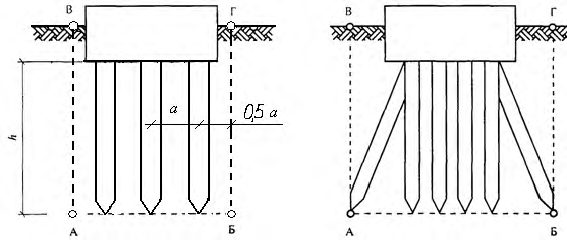
Расчет осадки условного фундамента проводят методом послойного суммирования деформаций линейно-деформируемого основания с условным ограничением сжимаемой толщи (см. СП 22.13330). Вертикальное нормальное напряжение σ zp , определяющее деформации и глубину сжимаемой толщи, подсчитывается только от действия нагрузки, приложенной к свайному фундаменту, т. е. вес грунта в пределах условного фундамента не учитывается. Начальные напряжения σ zu определяются с учетом экскавации котлована.
Возможен также трехмерный численный расчет осадки условного фундамента как анизотропного массива с учетом его конечной жесткости на сдвиг по вертикальным плоскостям.
Примечание - При расчете оснований опор мостов условный фундамент допускается принимать ограниченным с боков вертикальными плоскостями АВ и БГ, отстоящими от наружных крайних рядов вертикальных свай на расстоянии h tg( II, n /4), где II, n - среднее значение угла внутреннего трения грунта.
где Е 1 - осредненные значения модуля общей деформации в пределах длины сваи;
- Е 2 , ν 2 -осредненные значения модуля общей деформации и коэффициента Пуассона в пределах активной зоны сжатия массива под подошвой условного фундамента; p - среднее давление по подошве условного фундамента, кПа;
- a - осевое расстояние между сваями фундамента при одинаковом шаге их расстановки и осевое расстояние между сваями в окрестности данной сваи при неодинаковом шаге их расстановки; d - диаметр сваи;
- P = pa 2 для свай квадратного сечения и P ≈ 0,79 pa 2 для свай круглого сечения;
- k = b / a для свай квадратного сечения, где b - сторона сечения сваи и k = d / a для свай круглого сечения.
Рисунок 7.5 - Расчетная схема метода ячейки
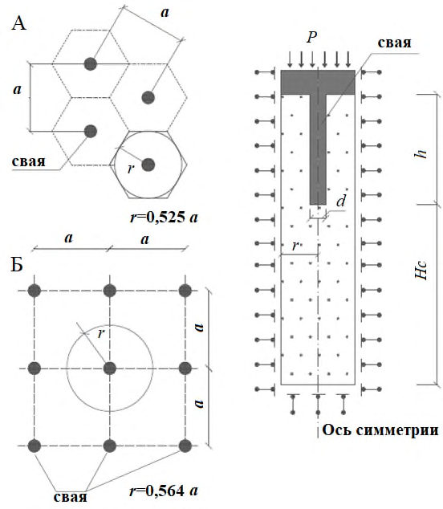
СП 24.13330.2021
Полученные при численном расчете значения δ для различных значений отношения a/d могут быть аппроксимированы формулой (7.41) или (7.50).
Расчет комбинированного свайно-плитного фундамента
- свай с грунтом;
- плиты (ростверка) с грунтом;
- взаимное влияние свай через грунт;
- взаимное влияние свай и плиты ростверка.
Указанные виды взаимодействий могут быть учтены путем расчетов с использованием численных моделей.
- определение деформаций конструктивной системы в целом и ее отдельных элементов;
- определение усилий в элементах конструктивной системы (в рядовых и крайних сваях), а также в плите ростверка.
Для сооружений геотехнических категорий 1 и 2 при расчете по пространственным расчетным схемам допускается определение суммарных жесткостных характеристик свайно-плитных фундаментов в соответствии с 7.4.8.
7.5Особенности проектирования большеразмерных кустов и полей свай и плит ростверка
- расчета свайных фундаментов мостовых сооружений;
- расчета свайных фундаментов на динамические нагрузки;
- определения смещений и углов поворота конструкций от кратковременных нагрузок и воздействий.
При определении усилий в сваях численными методами, учитывающими взаимодействие свай с примыкающим грунтом, принимается γ f = 1,3, при расчете по методике, учитывающей взаимное влияние свай (7.4.4), γ f = 1,4. При отсутствии указанных расчетов принимается γ f = 1,5.
Примечание - Для свай опор мостов может разрабатываться программа контроля их качества с учетом места расположения свай и способа их устройства.
7.6Особенности проектирования свайных фундаментов при реконструкции сооружений
Для свайных фундаментов могут быть использованы забивные, вдавливаемые, буроинъекционные и другие виды свай при соответствующем обосновании.
Безопасное по условиям динамических воздействий расстояние r , м, от погружаемых свай до сооружений, как правило, должно назначаться не менее 25 м и 35 м от памятников архитектуры.
Для сооружений, находящихся в удовлетворительном состоянии, при забивке свай молотами допустимые значения скоростей колебаний могут быть определены по таблице 7.19. В необходимых случаях, в том числе при вибропогружении свай, допустимые безопасные расстояния должны уточняться на основе инструментальных исследований параметров колебаний грунта и сооружений при пробном погружении свай.
Примечание - Уменьшение негативного динамического воздействия от забивки свай на сооружения возможно путем погружения свай в лидерные скважины, применением гидромолотов с большой массой ударной части при малой высоте ее подъема, вибропогружения и др.
Значения скорости колебаний V , см/с, сооружений вычисляют по формуле
где α и δ - соответственно амплитуда и частота колебаний, определяемые экспериментально при пробной забивке свай.
Таблица 7.19
| Допустимые скорости колебаний, см/с, при грунтах основания Пески | Допустимые скорости колебаний, см/с, при грунтах основания Пески | Допустимые скорости колебаний, см/с, при грунтах основания Пески | |
|---|---|---|---|
| Конструкции сооружений | плотные | средней плотности | рыхлые |
| Глинистые грунты при показателе текучести | Глинистые грунты при показателе текучести | Глинистые грунты при показателе текучести | |
| I L < 0,5 | 0,5 ≤ I L ≤ 0,75 | I L > 0,75 | |
| Монолитные железобетонные и каркасные со стальным каркасом | 4,5 | 3,0 | 1,0 |
| Каркасные с рамным каркасом из монолитного железобетона | 3,0 | 1,5 | 0,5 |
| Кирпичные блочные и панельные | 2,0 | 1,5 | 0,4 |
Минимально необходимое усилие F , кН, для вдавливания свай допускается определять по формуле
где с -коэффициент условий работы, принимаемый при скорости погружения сваи до 3 м/мин равным 1,2;
Fd - несущая способность сваи при различных глубинах ее погружения в грунтовых условиях участка строительства, кН.
При применении вдавливания свай для усиления оснований реконструируемых сооружений их фундаменты и подземные конструкции должны быть проверены на возможность восприятия усилия вдавливания F и в случае необходимости усилены.
- грунтовых и гидрогеологических условий на площадке, включая присутствие или возможность присутствия препятствий в основании;
- напряжений в свае при ее установке;
- возможности сохранения и проверки целостности сваи при установке;
- влияния метода и последовательности установки свай на уже установленные и на примыкающие сооружения и коммуникации;
- допусков, в пределах которых свая может быть надежно установлена с учетом технологических осадок;
- разрушительных химических воздействий в основании;
- возможности связи различных горизонтов подземных вод;
- грузоподъемных и транспортных операций со сваями;
- влияния устройства свай на соседние сооружения.
- перемещения и вибрации соседних сооружений при устройстве свай;
- используемый тип молота или вибратора;
- динамические напряжения в свае при забивке;
- необходимость поддерживать давление жидкости на уровне, обеспечивающем устойчивость стенок скважины и исключающем возможность возникновения гидроразрывов при устройстве буровых свай, для которых используются жидкости внутри скважины;
- очистку дна, а иногда и ствола скважины от шлама, особенно при их наполнении бентонитовым раствором;
- местную неустойчивость ствола скважины при бетонировании, что может приводить к попаданию грунта в тело сваи;
- попадания грунта и воды в тело набивных свай в свежеуложенную бетонную смесь;
- замедляющее действие химических веществ, содержащихся в грунте и грунтовой воде;
- уплотнение грунта и возникновение порового давления при устройстве свай вытеснения;
- нарушение грунта при бурении скважин для свай.
7.7Особенности проведения расчетов с применением геотехнического программного обеспечения
- непосредственно реализующие методики настоящего свода правил;
- реализующие инженерные методики расчета;
- использующие численные методы механики сплошных сред.
При проведении численных расчетов расчетная схема системы «надфундаментное строение (включая ростверк) -сваи -грунтовое основание» должна выбираться с учетом наиболее существенных факторов, определяющих сопротивление указанной системы. Необходимо учитывать продолжительность и возможное изменение во времени нагружения свай и свайных фундаментов.
Расчетная модель свайных фундаментов должна строиться таким образом, чтобы содержать погрешность только в сторону запаса надежности проектируемых надземных конструкций. Если заранее такая погрешность не может быть определена, необходимо проведение вариантных расчетов и определение наиболее неблагоприятных воздействий для надземных конструкций.
При проведении компьютерных расчетов свайных фундаментов следует учитывать возможные неопределенности, связанные с назначением расчетной модели и выбором деформационных и прочностных показателей грунтов основания. Для этого при проведении численных расчетов, определяющих возможное сопротивление одиночных свай, кустов (групп свай) и свайно-плитных фундаментов, рекомендуется проводить сопоставление результатов расчета отдельных элементов расчетной схемы с аналитическими решениями, а также выполнять сопоставление альтернативных результатов расчета по различным геотехническим программам.
- определения несущей способности одиночных свай;
- расчета одиночных свай по деформациям;
- определения усилий в сваях и объединяющих их ростверках в составе свайных и плитно-свайных фундаментов при расчете на действие всех видов нагрузок;
- совместных расчетов сооружений и свайных фундаментов;
- расчетов противооползневых мероприятий с применением свай;
- расчетов свайных фундаментов на сейсмические воздействия;
- расчетов деформаций свайных фундаментов во времени;
- моделирования возведения свайных фундаментов.
Примечания
1 Совместные расчеты сооружений и свайных фундаментов представляют собой расчеты системы «верхнее строение-сваи-прилегающий массив грунта» с применением профильного программного обеспечения.
2 Моделирование возведения свайных фундаментов должно описывать постадийно все процессы устройства свай - бурение с или без бентонитового раствора, бетонирование свай и т. д.
Верификация расчетных схем и результатов расчета может осуществляться следующими способами:
- многоступенчатым контролем правильности задания исходных данных для проведения расчетов;
- расчетом с использованием различных типов программного обеспечения;
- проведением расчетов независимыми группами расчетчиков;
- сопоставлением результатов расчета с натурными данными или результатами расчетов по объектам-аналогам.
Для свайных фундаментов, проектируемых для сооружений класса КС3, расчет по двум независимым программным комплексам обязателен.
Примечание - Под существенным расхождением результатов расчетов по разным программам понимаются различия полученных по расчету усилий и деформаций конструкций сооружений, влияющих на принятие технических решений.
где OCR - параметр начального состояния (коэффициент переуплотнения грунта по ГОСТ Р 58326). Величину OCR рекомендуется принимать не более двух. При отсутствии данных о величине OCR, следует принимать его равным единице.
7.8Особенности проектирования свайных фундаментов для различных видов сооружений
Таблица 7.20
| Дополнительные коэффициенты условий работы γ c при длине сваи | Дополнительные коэффициенты условий работы γ c при длине сваи | Дополнительные коэффициенты условий работы γ c при длине сваи | Дополнительные коэффициенты условий работы γ c при длине сваи | |
|---|---|---|---|---|
| Вид фундамента, характеристика грунта и нагрузки | ≥ 25 d | l < 25 d и отношении | l < 25 d и отношении | l < 25 d и отношении |
| H / N ≤ 0,1 | H / N = 0,4 | H / N = 0,6 | ||
| 1 Фундамент под нормальную промежуточную опору при расчете: | ||||
| а) одиночных свай на выдергивающие нагрузки: в песках и супесях | 0,9 | 0,9 | 0,8 | 0,55 |
| в глинах и суглинках при I L ≤ 0,6 | 1,15 | 1,15 | 1,05 | 0,7 |
| то же, при I L > 0,6 | 1,5 | 1,5 | 1,35 | 0,9 |
| б) одиночных свай на сжимающие нагрузки и свай в составе куста на выдергивающие нагрузки: в песках и супесях | 0,9 | 0,9 | 0,9 | 0,9 |
| в глинах и суглинках при I L ≤ 0,6 | 1,15 | 1,15 | 1,15 | 1,15 |
| то же, при I L > 0,6 | 1,5 | 1,5 | 1,5 | 1,5 |
| 2 Фундамент под анкерную, угловую концевую опоры, под опоры больших переходов при расчете: а) одиночных свай на выдергивающие нагрузки: в песках и супесях | 0,8 | 0,8 | 0,7 | 0,6 |
| в глинах и суглинках | 1,0 | 1,0 | 0,9 | 0,6 |
| б) свай в составе куста на выдергивающие нагрузки: | ||||
| в песках и супесях | 0,8 | 0,8 | 0,8 | 0,8 |
| в глинах и суглинках | 1,0 | 1,0 | 1,0 | 1,0 |
| в) свай в составе куста на сжимающие нагрузки во всех видах грунтов | 1,0 | 1,0 | 1,0 | 1,0 |
Примечания
1 В настоящей таблице приняты обозначения: l - погруженная в грунт длина сваи; d - диаметр круглого, сторона квадратного или бόльшая сторона прямоугольного сечения сваи; H - горизонтальная составляющая расчетной нагрузки; N - вертикальная составляющая расчетной нагрузки.
2 При погружении одиночной сваи с наклоном в сторону действия горизонтальной составляющей нагрузки и при угле наклона к вертикали более 10° дополнительный коэффициент условий работы следует принимать как для вертикальной сваи, работающей в составе куста.
Таблица 7.21
| Расчетное сопротивление грунтов R , кПа, под нижним концом забивных свай для | Расчетное сопротивление грунтов R , кПа, под нижним концом забивных свай для | Расчетное сопротивление грунтов R , кПа, под нижним концом забивных свай для | Расчетное сопротивление грунтов R , кПа, под нижним концом забивных свай для | Расчетное сопротивление грунтов R , кПа, под нижним концом забивных свай для | Расчетное сопротивление грунтов R , кПа, под нижним концом забивных свай для | Расчетное сопротивление грунтов R , кПа, под нижним концом забивных свай для | Расчетное сопротивление грунтов R , кПа, под нижним концом забивных свай для | Расчетное сопротивление грунтов R , кПа, под нижним концом забивных свай для | Расчетное сопротивление грунтов R , кПа, под нижним концом забивных свай для | ||
|---|---|---|---|---|---|---|---|---|---|---|---|
| Глубина погружения сваи l , м | Коэффициент пористости e | песков | песков | песков | песков | глинистых грунтов при показателе текучести I L , равном | глинистых грунтов при показателе текучести I L , равном | глинистых грунтов при показателе текучести I L , равном | глинистых грунтов при показателе текучести I L , равном | глинистых грунтов при показателе текучести I L , равном | глинистых грунтов при показателе текучести I L , равном |
| крупных | средней крупности | мелких | пылеватых | 0,0 | 0,2 | 0,4 | 0,6 | 0,8 | 1,0 | ||
| 2 | ≤ 0,55 | 8300 | 3900 | 2500 | 1500 | 6500 | 3900 | 2000 | 1000 | 600 | 300 |
| 0,70 | 6400 | 3000 | 1900 | 1200 | 5400 | 3200 | 1700 | 900 | 500 | 250 | |
| 1,00 | - | - | - | - | 3200 | 1900 | 1000 | 600 | 300 | 150 | |
| 3 | ≤ 0,55 | 8500 | 4100 | 2700 | 1600 | 6600 | 4000 | 2100 | 1100 | 650 | 350 |
| 0,70 | 6600 | 3200 | 2100 | 1300 | 5500 | 3300 | 1800 | 1000 | 550 | 250 | |
| 1,00 | - | - | - | - | 3300 | 2000 | 1100 | 700 | 350 | 200 |
Примечание - Для промежуточных значений l , IL и e значения R определяют интерполяцией.
Таблица 7.22
| Средняя глубина расположения слоя грунта h i , м | Коэффициент пористости грунта в слое | Расчетное сопротивление грунта f i , кПа, на боковой поверхности забивных свай, в том числе таврового и двутаврового сечений для | Расчетное сопротивление грунта f i , кПа, на боковой поверхности забивных свай, в том числе таврового и двутаврового сечений для | Расчетное сопротивление грунта f i , кПа, на боковой поверхности забивных свай, в том числе таврового и двутаврового сечений для | Расчетное сопротивление грунта f i , кПа, на боковой поверхности забивных свай, в том числе таврового и двутаврового сечений для | Расчетное сопротивление грунта f i , кПа, на боковой поверхности забивных свай, в том числе таврового и двутаврового сечений для | Расчетное сопротивление грунта f i , кПа, на боковой поверхности забивных свай, в том числе таврового и двутаврового сечений для | Расчетное сопротивление грунта f i , кПа, на боковой поверхности забивных свай, в том числе таврового и двутаврового сечений для | Расчетное сопротивление грунта f i , кПа, на боковой поверхности забивных свай, в том числе таврового и двутаврового сечений для | Расчетное сопротивление грунта f i , кПа, на боковой поверхности забивных свай, в том числе таврового и двутаврового сечений для |
|---|---|---|---|---|---|---|---|---|---|---|
| Средняя глубина расположения слоя грунта h i , м | Коэффициент пористости грунта в слое | песков | песков | песков | глинистых грунтов при показателе текучести I L , равном | глинистых грунтов при показателе текучести I L , равном | глинистых грунтов при показателе текучести I L , равном | глинистых грунтов при показателе текучести I L , равном | глинистых грунтов при показателе текучести I L , равном | глинистых грунтов при показателе текучести I L , равном |
| Средняя глубина расположения слоя грунта h i , м | e | крупных и средней крупности | мелких | пылеватых | 0,0 | 0,2 | 0,4 | 0,6 | 0,8 | 1,0 |
| 1 | ≤ 0,55 0,7 | 80 60 | 55 | 45 30 | 46 45 | 39 37 | 32 30 | 25 23 | 18 16 | 11 9 |
| 1 | 40 | |||||||||
| 1 | 1,00 | - | - | - | - | 32 | 23 | 15 | 10 | 6 |
| 2 - 3 | ≤ 0,55 | 85 | 60 | 50 | 68 | 53 | 40 | 29 | 20 | 13 |
| 2 - 3 | 0,7 | 65 | 45 | 35 | 65 | 50 | 37 | 26 | 18 | 11 |
| 2 - 3 | 1,0 | - | - | - | 60 | 45 | 32 | 21 | 13 | 7 |
Примечание - Для промежуточных значений hi , e и IL значения f i определяют интерполяцией.
Таблица 7.23
| Расчетное сопротивление R , кПа, под нижним концом набивных и буровых свай при глубине их погружения 2-3 м и расчетное сопротивление R con , кПа, под консолями свай-колонн для | Расчетное сопротивление R , кПа, под нижним концом набивных и буровых свай при глубине их погружения 2-3 м и расчетное сопротивление R con , кПа, под консолями свай-колонн для | Расчетное сопротивление R , кПа, под нижним концом набивных и буровых свай при глубине их погружения 2-3 м и расчетное сопротивление R con , кПа, под консолями свай-колонн для | Расчетное сопротивление R , кПа, под нижним концом набивных и буровых свай при глубине их погружения 2-3 м и расчетное сопротивление R con , кПа, под консолями свай-колонн для | ||
|---|---|---|---|---|---|
| Вид грунтов | Коэффициент | песков | песков | песков | песков |
| пористости e | крупных | средней крупности | мелких | пылеватых | |
| глинистых грунтов при показателе текучести I L , равном | глинистых грунтов при показателе текучести I L , равном | глинистых грунтов при показателе текучести I L , равном | глинистых грунтов при показателе текучести I L , равном | ||
| 0,0 | 0,2 | 0,4 | 0,6 | ||
| Пески | 0,55-0,8 | 2000 | 1500 | 800 | 500 |
| Супеси и | 0,5 | 800 | 650 | 550 | 450 |
| суглинки | 0,7 | 650 | 550 | 450 | 350 |
| 1,0 | 550 | 450 | 350 | 250 | |
| Глины | 0,5 | 1400 | 1100 | 900 | 700 |
| 0,6 | 1100 | 900 | 750 | 600 | |
| 0,8 | 700 | 600 | 500 | 400 |
Примечание - При повреждении или отсутствии противопучинистых обмазок прочность металлических труб, из которых изготовлены погруженные сваи, допускается определять с учетом срока службы сооружения и скорости развития коррозии, которая должна определяться с учетом данных об агрессивности грунтов и наличии блуждающих токов.
8Требования к конструированию свайных фундаментов
- а) одиночных свай -под отдельно стоящие опоры;
- б) свайных лент -под стены сооружений при передаче на фундамент распределенных по длине нагрузок с расположением свай в один, два и более рядов;
- в) свайных кустов -под колонны с расположением свай в плане на участке квадратной, прямоугольной, трапецеидальной и других форм;
- г) сплошного свайного поля - под тяжелые сооружения со сваями, расположенными под всем сооружением и объединенными сплошным ростверком, подошва которого размещена на грунте (бетонной подготовке);
- д) свайно-плитного фундамента.
Значение свеса ростверка от грани свай должно приниматься с учетом допускаемых отклонений свай.
Высоту ростверка определяют расчетом в соответствии с СП 63.13330. Ростверк рассчитывают как железобетонную многопролетную балку. Армирование ростверка выполняют пространственными арматурными каркасами из арматуры класса А-III (А400) или А500С. Для ростверка применяют бетон класса по прочности не ниже В15. Ростверк укладывают по бетонной подготовке класса не менее В7,5.
Размеры ростверка в плане должны приниматься кратными 30 см, а по высоте - 15 см. Конструктивную высоту ростверка назначают на 40 см больше глубины стакана. Ростверк рассчитывают на изгиб (плитная часть, стаканная часть) и на продавливание (продавливание колонны и угловой сваи) в соответствии с СП 63.13330. Армирование ростверка выполняют плоскими сетками (плитная часть) и пространственными каркасами (стенки стакана).
Плитные ростверки армируют верхними и нижними сетками из арматуры, которые укладывают на поддерживающие каркасы. Большеразмерные плитные ростверки изготавливают из бетона, укладываемого на бетонную подготовку.
Выбор конструкции и размеров свай должен осуществляться с учетом значений и направления действия нагрузок на фундаменты, а также технологии строительства сооружения.
При размещении свай в плане необходимо стремиться к минимальному числу их в свайных кустах или к максимально возможному шагу свай в лентах, добиваясь наибольшего использования принятой в проекте несущей способности свай. Необходимо рассматривать следующие варианты размещения свай в плане ленточного ростверка: однорядное, многорядное шахматное и многорядное.
Свободное опирание ростверка на сваи должно учитываться в расчетах условно как шарнирное сопряжение и при монолитных ростверках должно выполняться путем заделки головы сваи в ростверк на глубину 5 -10 см.
Жесткое сопряжение свайного ростверка со сваями следует предусматривать в случае, когда: а) стволы свай располагаются в слабых грунтах (рыхлых песках, глинистых грунтах текучей консистенции, илах, торфах и т. п.); б) в месте сопряжения сжимающая нагрузка, передаваемая на сваю, приложена к ней с эксцентриситетом, выходящим за пределы ее ядра сечения; в) на сваю действуют горизонтальные нагрузки, значения перемещений от которых при свободном опирании оказываются более предельных для проектируемого сооружения; г) в фундаменте имеются наклонные или вертикальные составные сваи; д) сваи работают на выдергивающие нагрузки.
Примечание - Допускается применять свайные фундаменты с промежуточной подушкой, а также с устройством основной и промежуточных плит ростверка, сопрягаемых через шов скольжения.
Допускается также жесткое сопряжение с помощью сварки закладных стальных элементов при условии обеспечения требуемой прочности.
Примечания
1 Анкеровка ростверка и свай, работающих на выдергивающие нагрузки по перечислению д ) 8.8, должна предусматриваться с заделкой арматуры свай в ростверк на глубину, определяемую расчетом на выдергивание.
2 При усилении оснований существующих фундаментов с помощью буроинъекционных свай длина заделки свай в фундамент должна приниматься по расчету или назначаться конструктивно равной пяти диаметрам сваи (при невозможности выполнения этого условия следует предусматривать создание уширения ствола сваи в месте ее примыкания к ростверку).
3 При жесткой заделке свай путем заведения их ствола в ростверк последний должен быть рассчитан на продавливание с учетом конструктивного решения такой заделки.
Расстояние в свету между стволами буровых, набивных свай и свайоболочек, а также между скважинами свай-столбов (кроме случаев применения буросекущихся и бурокасательных свай, для которых расстояние между сваями не регламентируется) должно быть не менее 1,0 м, а расстояние между буроинъекционными сваями в осях - не менее трех их диаметров; расстояние в свету между уширениями или лопастями винтовых свай при устройстве их в твердых и полутвердых глинистых грунтах - 0,5 м, в других дисперсных грунтах - 1,0 м.
Расстояние между наклонными или между наклонными и вертикальными сваями в уровне подошвы ростверка следует принимать исходя из конструктивных особенностей фундаментов и обеспечения их надежности заглубления в грунт, армирования и бетонирования ростверка.
Для контроля выбранной длины буровых и набивных свай и подтверждения принятых технических решений в проекте должны предусматриваться статические испытания свай.
СП 24.13330.2021
При строительстве на пучинистых грунтах необходимо предусматривать меры, предотвращающие или уменьшающие влияние сил морозного пучения грунта на свайный ростверк.
Расчет свайных фундаментов по устойчивости и прочности на воздействие сил морозного пучения рекомендуется выполнять согласно приложению Г.
Для фундаментов мостов подошву ростверка следует располагать выше или ниже поверхности акватории, ее дна или поверхности грунта при условии обеспечения расчетной несущей способности и долговечности фундаментов исходя из местных климатических условий, особенностей конструкции фундаментов, обеспечения требований судоходства и лесосплава, надежности мер по эффективной защите свай от неблагоприятного воздействия знакопеременных температур среды, ледохода, истирающего воздействия перемещающихся донных отложений и других факторов.
Внутреннее пространство полых свай с закрытым нижним концом допускается заполнять сухой цементно-песчаной смесью (ЦПС) на всю длину сваи в случае приварки металлической крышки (оголовка) сверху.
В условиях переменного промерзания-оттаивания необходимо обеспечивать герметичность внутренней полости свай металлических свай в соответствии с СП 25.13330.
40 °С допускается вне акватории использовать сваи сплошного сечения, полые сваи и сваи-оболочки с защитным слоем бетона не менее 3 см при условии осуществления мер по предотвращению образования в них трещин. В зоне переменного уровня постоянных водотоков не следует применять буронабивные сваи и заполненные бетоном сваи-оболочки.
Для буронабивных свай фундаментов мостов защитный слой бетона должен быть не менее 10 см.
В зоне воздействия положительных температур (не менее чем на 0,5 м ниже уровня сезонного промерзания грунта или подошвы ледяного покрова) можно применять сваи любых видов без ограничений по условию морозостойкости бетона.
- площадка строительства сложена глинистыми грунтами мягкопластичной и текучепластичной консистенций или водонасыщенными пылеватыми и мелкими песками;
- погружение свай производится со дна котлована;
- конструкция свайного фундамента принята в виде свайного поля или свайных кустов при расстоянии между их крайними сваями менее 9 м.
Среднее значение подъема поверхности грунта h , м, следует определять по формуле
где k - коэффициент, принимаемый равным 0,6 при степени влажности грунта более 0,9;
Vp - объем всех свай, погружаемых в грунт, м³ ;
Ae - площадь погружения свай или площадь дна котлована, м² .
9Особенности проектирования свайных фундаментов в просадочных грунтах
Наряду с бурением скважин необходимо предусматривать проходку шурфов с отбором монолитов грунта.
При изучении на застраиваемой территории гидрогеологического режима подземных вод и прогнозировании его изменения при строительстве и эксплуатации сооружений необходимо прогнозировать возможность замачивания грунтов в результате действия различных факторов.
Физико-механические, в том числе прочностные и деформационные, характеристики просадочных грунтов должны определяться для состояния природной влажности и при полном водонасыщении. Относительную просадочность грунтов следует определять в условиях их замачивания водой, которая по температуре и химическим примесям соответствует циркулирующей в инженерных сетях как проектируемого объекта, так и сооружений, расположенных на примыкающей к нему территории.
Нижние концы свай должны быть заглублены в скальные грунты, пески плотные и средней плотности и глинистые грунты с показателем текучести в водонасыщенном состоянии:
I L < 0,6 - для всех видов свай в грунтовых условиях I типа;
I L < 0,4 - для забивных свай и I L < 0,2 - для буронабивных свай при ssl , g ≤ su в грунтовых условиях II типа;
I L < 0,2 - для забивных свай и I L ≤ 0 - для буронабивных свай при ssl , g > su в грунтовых условиях II типа (где ssl , g - просадка от собственного веса грунта с учетом подсыпки или другой пригрузки его поверхности).
Заглубление свай в указанные грунты должно назначаться по расчету путем проверки условия, что осадка сваи не превышает предельную осадку su , и условия обеспечения требуемой несущей способности сваи. При этом принимают наибольшее из полученных значений заглубления сваи.
Примечания
1 Если прорезка указанных грунтов в конкретных случаях экономически нецелесообразна, то в грунтовых условиях I типа по просадочности для сооружений класса КС-1 допускается устройство свай (кроме свай-оболочек) с заглублением нижних концов не менее чем на 1 м в слой грунта с относительной просадочностью ε sl ≤ 0,02 (при давлении не менее 3 МПа и не менее давления, соответствующего давлению от собственного веса грунта и нагрузки на его поверхности) при условии, что в этом случае обеспечивается несущая способность свай, а суммарные значения возможных просадок и осадок основания не превышают предельных значений для сооружения при неравномерном замачивании грунтов. При этом должна быть обеспечена несущая способность свай и свайных фундаментов, а возможные недопустимые осадки и просадки грунтов должны быть исключены применением дополнительных мероприятий.
2 Сваи-колонны одноэтажных сооружений класса КС-1 в грунтовых условиях I типа допускается опирать нижними концами на грунты с ε sl ≤ 0,02 (при давлении не менее 3 МПа и не менее давления, соответствующего давлению от собственного веса грунта и нагрузки на его поверхности), если несущая способность свай на объекте подтверждена статическими испытаниями не менее трех свай.
где k - коэффициент, принимаемый равным: 1,0 - для супесей, 0,9 - для суглинков и глин; e -коэффициент пористости грунта природной плотности;
w удельный вес воды; w = 10 кН/м³ ;
s удельный вес твердых частиц, кН/м³ ; wp, wL - влажности грунта на границе раскатывания и текучести, дол. ед.; при значениях I L < 0,4 и I L > 1,0, полученных при расчете по формуле (9.1), I L следует принимать равными соответственно 0,4 и 1,0; б) при влажности w и показателе текучести I L грунта в природном состоянии (когда w wp принимается wp ), если замачивание грунта невозможно.
В грунтовых условиях II типа при наличии опыта строительства на застраиваемой территории и результатов ранее выполненных статических испытаний свай в аналогичных условиях испытания свай допускается не проводить.
Не допускается определять несущую способность свай и свай-оболочек, устраиваемых в просадочных грунтах, по данным результатов их динамических испытаний, а также определять расчетные сопротивления просадочных грунтов под нижним концом и на боковой поверхности сваи по данным результатов полевых испытаний этих грунтов динамическим зондированием.
Статическое зондирование допускается применять: ниже границы просадочной толщи - при выборе слоев грунта для опирания свай и для определения расчетных сопротивлений грунтов под нижним концом R и на боковой поверхности сваи f i ; в грунтовых условиях I типа - для определения расчетных сопротивлений замоченных просадочных грунтов под нижним концом R и на боковой поверхности сваи f i ; в грунтовых условиях II типа - при определении отрицательной силы трения просадочных грунтов на боковой поверхности сваи в соответствии с 9.10.
В грунтовых условиях I типа допускается применение свай с антифрикционной (противопросадочной) оболочкой, устраиваемой на части ствола в пределах просадочной толщи, если несущая способность таких свай подтверждена результатами статических испытаний.
где N - расчетная нагрузка, кН, на одну сваю; γ c -коэффициент условий работы сваи, принимаемый равным при определении Pn по результатам: полевых испытаний свай при длительном замачивании просадочной толщи снизу - γ c = 1,0; полевых испытаний свай по ГОСТ 5686 в грунтах природной влажности -γc = 1,2; расчетов с использованием данных статического зондирования и таблицы 7.16 γc = 1,25; расчетов в соответствии с подразделом 7.2 γc = 1,4; расчетов с использованием компьютерных программ на основании численного моделирования γc = 1,5;
Pn - отрицательная сила трения, определяемая в соответствии с 9.10;
Fd - несущая способность сваи, кН, определяемая в соответствии с 9.11; γ c,g, γ n - коэффициенты, принимаемые по 7.1.11.
Примечания
1 Значение Pn следует определять, как правило, для грунтов природной влажности (при возможном замачивании грунтов снизу).
2 По прочности материала сваи должны быть рассчитаны на нагрузку N + Pn , действующую на глубине hsl (см. 9.10).
До проведения испытаний на выдергивание значение Pn допускается определять: а) по формуле
где u - периметр ствола сваи, м; hsl - расчетная глубина, м, до которой производится суммирование сил бокового трения проседающих слоев грунта, принимаемая равной глубине просадочной толщи;
i - расчетное сопротивление, кПа, определяемое по формуле
здесь - экспериментальный параметр, характеризующий боковое давление на контакте сваи с грунтом; σ zg - вертикальное напряжение от собственного веса грунта, кПа; φI и c I - расчетные значения угла внутреннего трения, град., и удельного сцепления, iго слоя грунта природной влажности, определяемые методом одноплоскостного среза в соответствии с ГОСТ 12248.1; ni - пористость i -го слоя грунта, дол. ед.;
Hi - глубина расположения середины расчетного iго слоя грунта, м;
Н 0 = 1 м; hi - толщина, м, i -го слоя просадочного грунта, оседающего при замачивании и соприкасающегося с боковой поверхностью сваи; б) по результатам статического зондирования грунтов природной влажности на расчетную глубину hsl в соответствии с подразделом 7.3 и использованием таблицы 7.16.
Примечания
1 При расположении уровня подземных вод (УПВ) ниже границы просадочной толщи при испытаниях свай следует обеспечивать водонасыщение грунтов в интервале от существующего УПВ до нижней границы просадочной толщи.
2 При техногенном повышении УПВ в толще просадочных грунтов и при отсутствии данных о произошедших при этом просадочных деформациях, испытания свай следует выполнять исходя из условия расположения УПВ на отметке нижней границы просадочной толщи, соответствующей началу техногенного подъема УПВ.
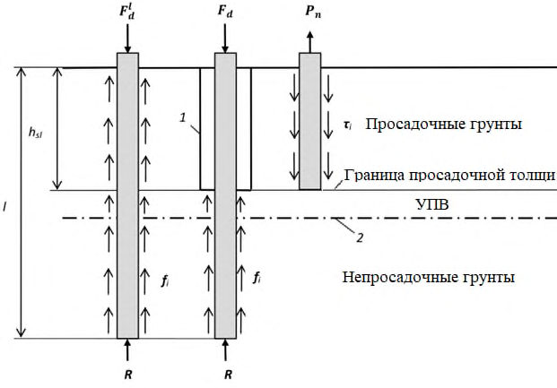
1 - обсадная труба; 2 - уровень подземных вод
Рисунок 9.1 - Общая схема испытаний свай статическими нагрузками в грунтовых условиях II-го типа по просадочности
10Особенности проектирования свайных фундаментов в набухающих грунтах
где hsw - подъем поверхности набухающего грунта, м; h' sw , p - подъем слоя грунта в уровне заложения нижнего конца свай (в случае прорезки набухающей зоны грунта h' sw , p = 0);
Ω, ω - коэффициенты, определяемые по таблице 10.1, при этом Ω зависит от показателя α, который характеризует уменьшение деформации по глубине массива при набухании грунта и принимается для набухающих глин: сарматских - 0,31 м -1 , аральских - 0,36 м -1 и хвалынских - 0,42 м -1 ; u - периметр сваи, м;
N - расчетная нагрузка на сваю, кН, определенная с коэффициентом надежности по нагрузке γ f = 1.
Таблица 10.1
| Глубина погружения сваи, м | Коэффициент Ω, м -1 , при значениях α | Коэффициент Ω, м -1 , при значениях α | Коэффициент Ω, м -1 , при значениях α | Коэффициент Ω, м -1 , при значениях α | Коэффициент Ω, м -1 , при значениях α | Коэффициент ω, м² /кН |
|---|---|---|---|---|---|---|
| Глубина погружения сваи, м | 0,2 | 0,3 | 0,4 | 0,5 | 0,6 | Коэффициент ω, м² /кН |
| 3 | 0,72 | 0,62 | 0,53 | 0,46 | 0,40 | - |
| 4 | 0,64 | 0,53 | 0,44 | 0,36 | 0,31 | 1,5 |
| 5 | 0,59 | 0,46 | 0,36 | 0,29 | 0,24 | 1,1 |
| 6 | 0,53 | 0,40 | 0,31 | 0,24 | 0,19 | 0,7 |
| 7 | 0,48 | 0,35 | 0,26 | 0,20 | 0,15 | 0,5 |
| 8 | 0,44 | 0,31 | 0,22 | 0,17 | 0,13 | 0,4 |
| 9 | 0,40 | 0,27 | 0,19 | 0,14 | 0,11 | 0,3 |
| 10 | 0,37 | 0,24 | 0,17 | 0,12 | 0,09 | 0,2 |
| 11 | 0,34 | 0,21 | 0,15 | 0,10 | 0,08 | 0,2 |
| 12 | 0,31 | 0,19 | 0,13 | 0,09 | 0,07 | 0,1 |
Предельные значения подъема сооружений, а также значения подъема поверхности набухающего грунта hsw и подъема слоя грунта в уровне расположения нижних концов свай hsw , p следует определять в соответствии с СП 22.13330.
Fsw - равнодействующая расчетных сил подъема, кН, действующих на боковой поверхности сваи, определяемая по результатам их полевых испытаний в набухающих грунтах или определяемая с использованием таблицы 7.3 с учетом коэффициента надежности по нагрузке для сил набухания грунта γ f = 1,2;
Fdu -несущая способность участка сваи, кН, расположенного в ненабухающем грунте, при действии выдергивающих нагрузок, определенная с учетом 10.2; γ n, γ c,g - см. формулу (7.2).
где N , Fsw - см. формулу (10.2); γII - расчетное значение удельного веса грунта, кН/м³ ;
Vg -объем грунта, препятствующий подъему сваи, м³ , и принимаемый равным объему грунта в пределах расширяющегося усеченного конуса высотой h с нижним (меньшим) диаметром, равным диаметру уширения d , а верхним диаметром d' = h + d (здесь h - расстояние от природной поверхности грунта до середины уширения сваи).
При толщине слоя набухающего грунта менее 12 м допускается устраивать ростверк, опирающийся непосредственно на грунт, при соблюдении условия (10.2).
При расположении свай в виде куста или свайного поля подъем свайных фундаментов следует рассчитывать с учетом взаимного влияния свай.
11Особенности проектирования свайных фундаментов на подрабатываемых территориях
использоваться данные горно-геологических изысканий и сведения об ожидаемых деформациях земной поверхности.
- жесткие -при жесткой заделке голов свай в ростверк путем заанкеривания в нем выпусков арматуры свай или непосредственной заделки в нем головы сваи в соответствии с 8.9;
- податливые - при условно-шарнирном сопряжении сваи с ростверком, выполненном путем заделки ее головы в ростверк на 5-10 см или сопряжения через шов скольжения.
- а) изменений физико-механических свойств грунтов, вызванных подработкой территории, в соответствии с 11.6;
- б) перераспределения вертикальных нагрузок на отдельные сваи, вызванного наклоном, искривлением и уступообразованием земной поверхности, в соответствии с 11.7; в) дополнительных нагрузок в горизонтальной плоскости, вызванных относительными горизонтальными деформациями грунтов основания, в соответствии с 11.8.
где γ cr - коэффициент условий работы, учитывающий изменение физикомеханических свойств грунтов и перераспределение вертикальных нагрузок при подработке территории: для свай-стоек в фундаментах любых сооружений γ cr = 1; для висячих свай в фундаментах податливых сооружений (например, одноэтажных каркасных с шарнирными опорами) γ cr = 0,9; для висячих свай в фундаментах жестких сооружений (например, бескаркасных многоэтажных зданий с жесткими узлами, силосных корпусов) γ cr = 1,1;
Fd - несущая способность сваи, кН, определенная расчетом по 7.2 или по результатам полевых исследований (испытания свай динамической или статической нагрузкой, зондирование грунтов) в соответствии с 7.3.
Примечание - В случае крутопадающих пластов в формуле (11.1) следует также учитывать зависящий от значения относительной горизонтальной деформации ε h , мм/м, дополнительный коэффициент γ cr = 1/(1 + 100ε h ).
- свайные фундаменты из висячих свай и их основания заменяют, в соответствии с 7.4, условным фундаментом на естественном основании;
- основание условного фундамента принимают линейно деформируемым с постоянными по длине сооружения или выделенного в нем отсека модулем деформации и коэффициентом постели грунта.
Дополнительные вертикальные нагрузки определяют относительно продольной и поперечной осей сооружения.
где γ f , γ c - соответственно коэффициенты надежности по нагрузке и условиям работы для относительных горизонтальных деформаций, принимаемые согласно СП 21.13330;
- ε h -ожидаемое значение относительной горизонтальной деформации, определяемое по результатам маркшейдерского расчета, мм/м;
- x - расстояние от оси рассматриваемой сваи до центральной оси сооружения с ростверком, устраиваемым на всю длину сооружения (отсека) или до блока жесткости каркасного сооружения (отсека) с ростверком, устраиваемым под отдельные колонны, м.
Для выполнения этого требования в проектах необходимо предусматривать: а) разрезку сооружения на отсеки для уменьшения влияния горизонтальных перемещений грунта основания; б) преимущественно висячие сваи для сооружений с жесткой конструктивной схемой для снижения дополнительно возникающих усилий в вертикальной плоскости от искривления основания; в) сваи возможно меньшей жесткости, например призматические, квадратного или прямоугольного поперечного сечения, при этом сваи прямоугольного сечения следует располагать меньшей стороной в продольном направлении отсека сооружения; г) преимущественно податливые конструкции сопряжения свай с ростверком, указанные в 11.4; д) выравнивание сооружений с помощью домкратов или других выравнивающих устройств.
При разрезке сооружения на отсеки между ними в ростверке следует предусматривать зазоры (деформационные швы), размеры которых определяют как для нижних конструкций сооружений в соответствии с СП 21.13330.
- с висячими сваями - на территориях I-IV групп для любых видов и конструкций сооружений;
- со сваями-стойками - на территориях III и IV групп для сооружений, проектируемых с податливой конструктивной схемой здания при искривлении основания, а для IV группы -и для сооружений, проектируемых с жесткой конструктивной схемой.
Примечания
1 Деление подрабатываемых территорий на группы принято в соответствии с СП 21.13330.
2 Сваи-оболочки, набивные и буровые сваи диаметром более 600 мм и другие виды жестких свай допускается применять, как правило, только в свайных фундаментах с податливой схемой при сопряжении их с ростверком через шов скольжения (11.4).
3 Заглубление в грунт свай на подрабатываемых территориях должно быть не менее 4 м, за исключением случаев опирания свай на скальные грунты.
- 2 -жестком;
5 -податливом, условно-шарнирном;
8 -податливом через шов скольжения.
Примечание -Для снижения значений усилий, возникающих в сваях и ростверке от воздействия горизонтальных перемещений грунта основания, а также для обеспечения пространственной устойчивости свайных фундаментов сооружения в целом сваи свайного поля в зоне действия небольших перемещений грунта (до 2 см) следует предусматривать с жестким сопряжением, а остальные -с податливым (шарнирным или сопряжением через шов скольжения).
12Особенности проектирования свайных фундаментов в сейсмических районах
В районах сейсмичностью менее 7 баллов основания следует проектировать без учета сейсмических воздействий.
Для проектирования свайных фундаментов должны использоваться данные сейсмологических и сейсмотектонических исследований, а также сейсмического микрорайонирования площадки строительства, которые следует предусматривать в составе инженерных изысканий в случаях, указанных в СП 14.13330.
Не рекомендуется использовать в качестве оснований свайных фундаментов водонасыщенные грунты, способные к динамическому разжижению, без проведения предварительных мероприятий по улучшению их строительных свойств (уплотнение, закрепление, замена грунтов в основании и пр.).
Динамические свойства грунтов и их способность к разжижению при сейсмических воздействиях в лабораторных условиях следует определять по ГОСТ Р 56353. На первом этапе инженерно-геологических изысканий для подготовки проектной документации в соответствии с СП 446.1325800 возможность разжижения водонасыщенных песков рекомендуется предварительно определять с использованием динамического зондирования.
При соответствующем расчетном обосновании при прорезке свайными фундаментами допускается предусматривать возможность динамического разжижения в верхней толще грунта на глубину, не превышающую величину hd , определяемую по формуле (12.1) и не превышающую 3 м.
При этом проектное решение свайного фундамента должно предусматривать жесткую заделку голов свай в ростверк.
При расчете на особое сочетание нагрузок необходимо предусматривать: а) определение несущей способности одиночной сваи на сжимающую и выдергивающую нагрузки в соответствии с 7.2; б) проверку устойчивости грунта по условию ограничения давления, передаваемого на грунт боковыми поверхностями свай, в соответствии с формулой (Б.7) либо численными методами по 7.7; в) расчет свай по прочности материала на совместное действие расчетных усилий (продольной силы, изгибающего момента и поперечной силы), значения которых определяют с учетом приложения Б в зависимости от расчетных значений сейсмических нагрузок либо численными методами в соответствии с 7.7.
Примечание - При определении расчетных значений сейсмических нагрузок, действующих на сооружение, высокий свайный ростверк, в случае его наличия, следует рассматривать как каркасный нижний этаж.
При расчете несущей способности свай при сейсмическом воздействии сопротивление грунта f i на боковой поверхности сваи до расчетной глубины hd по формуле (12.1) следует принимать равным нулю.
Расчетную сейсмичность площадки строительства сооружений в баллах в таблице 12.1 следует принимать в соответствии с СП 14.13330 в зависимости от уровня ответственности и назначения сооружения, сейсмичности района строительства, инженерно-геологических условий конкретной площадки.
Таблица 12.1
| Расчетная | Коэффициент условий работы γ e q 1 для корректировки значений R при грунтах | Коэффициент условий работы γ e q 1 для корректировки значений R при грунтах | Коэффициент условий работы γ e q 1 для корректировки значений R при грунтах | Коэффициент условий работы γ e q 1 для корректировки значений R при грунтах | Коэффициент условий работы γ e q 1 для корректировки значений R при грунтах | Коэффициент условий работы γ e q 1 для корректировки значений R при грунтах | Коэффициент условий работы γ eq 2 для корректировки значений f i при грунтах | Коэффициент условий работы γ eq 2 для корректировки значений f i при грунтах | Коэффициент условий работы γ eq 2 для корректировки значений f i при грунтах | Коэффициент условий работы γ eq 2 для корректировки значений f i при грунтах | Коэффициент условий работы γ eq 2 для корректировки значений f i при грунтах |
|---|---|---|---|---|---|---|---|---|---|---|---|
| Расчетная | Пески плотные | Пески плотные | Пески средней плотности | Пески средней плотности | Глинистые грунты при показателе текучести | Глинистые грунты при показателе текучести | Пески плотные и средней плотности | Пески плотные и средней плотности | Глинистые грунты при показателе текучести | Глинистые грунты при показателе текучести | Глинистые грунты при показателе текучести |
| строитель- ства, балл | мало- влажные и влажные | насы- щенные водой | мало- влажные и влажные | насы- щенные водой | I L < 0 | 0 ≤ I L ≤ 0,5 | мало- влажные и влажные | насы- щенные водой | I L < 0 | 0 ≤ I L ≤ 0,75 | 0,75 ≤ I L < 1 |
| 7 | 1 0,9 | 0,9 0,5 | 0,95 0,85 | 0,8 0,4 | 1 1 | 0,95 0,9 | 0,95 0,85 | 0,9 0,5 | 0,95 0,9 | 0,85 0,8 | 0,75 0,75 |
| 8 | 0,9 0,8 | 0,8 0,4 | 0,85 0,75 | 0,7 0,35 | 0,95 0,95 | 0,9 0,8 | 0,85 0,75 | 0,8 0,4 | 0,9 0,8 | 0,8 0,7 | 0,7 0,65 |
| 9 | 0,8 0,7 | 0,7 0,35 | 0,75 0,6 | - | 0,9 0,85 | 0,85 0,7 | 0,75 0,65 | 0,7 0,35 | 0,85 0,65 | 0,7 0,6 | 0,6 0,4 |
где a 1 , a 2 , a 3 - безразмерные коэффициенты, равные соответственно 1,5; 0,8 и 0,6 при высоком ростверке и для отдельно стоящей сваи,
1,2; 1,2 и 0 - при жесткой заделке сваи в низкий ростверк или для свай с промежуточной подушкой;
- H , M - расчетные значения соответственно горизонтальной силы, кН, и изгибающего момента, кН м, приложенных к свае в уровне ее головы при особом сочетании нагрузок с учетом сейсмических воздействий;
- αε - коэффициент деформации, 1/м, определяемый по формуле (Б.3); bp - условная ширина сваи, м, определяемая по Б.5 ;
- γI - расчетное значение удельного веса грунта, кН/м³ , определяемое в водонасыщенных грунтах с учетом взвешивающего действия воды;
- φI, c I - расчетные значения соответственно угла внутреннего трения грунта, град., с учетом 12.8 и удельного сцепления грунта, кПа.
В проектах, в которых головы свай заделаны в конструкцию ростверка, рекомендуется предусматривать контрольные испытания свай на горизонтальную нагрузку, которые следует выполнять согласно ГОСТ 5686.
При расчете свайных фундаментов и их оснований на особое сочетание нагрузок с учетом сейсмических инерционных объемных сил в соответствии с 7.7 в качестве расчетного значения угла внутреннего трения следует принимать φI.
где keq - коэффициент, учитывающий снижение несущей способности сваи при сейсмических воздействиях, определяемый расчетом как отношение значения несущей способности сваи, вычисленного в соответствии с 12.5-12.8 с учетом сейсмических воздействий, и значения несущей способности сваи, определенной согласно 7.2 без учета сейсмических воздействий;
- Fd -несущая способность сваи, кН, определенная по результатам статических или динамических испытаний или по данным статического зондирования грунта в соответствии с 7.3 без учета сейсмических воздействий.
Не допускается также применение бетонных свай, т. е. свай без арматурных каркасов по всей длине свайного ствола.
Опирание нижних концов свай на рыхлые водонасыщенные пески, глинистые грунты с показателем текучести I L > 0,5 не рекомендуется, а на грунты, способные к динамическому разжижению, не допускается.
Примечание - Расчет свай на сейсмические воздействия не исключает необходимости выполнения их расчета в соответствии с разделами 9-11, рассматривая прочие особые воздействия в иных сочетаниях нагрузок.
Допускается проектировать фундаменты с низким или высоким ростверком, в который заведены головы свай, либо ростверк с промежуточной грунтовой подушкой, отделяющей головы свай от ростверка.
Фундаменты, в которых головы свай заведены в ростверк, рекомендуется предусматривать в условиях залегания органоминеральных, органических и просадочных грунтов II типа, на подрабатываемых территориях, геологически неустойчивых площадках (на которых имеются или могут возникать оползни, сели, карсты и т. п.) и на площадках, сложенных нестабилизированными водонасыщенными грунтами.
Толщина промежуточной подушки должна составлять не менее 0,4 м и, как правило, не превышать 1,0 м. Чем выше нагрузка, передаваемая на сваи, тем большей рекомендуется принимать толщину промежуточной подушки. Плановые размеры промежуточной подушки должны быть больше плановых размеров свайного ростверка на величину не менее толщины подушки.
Устройство промежуточных подушек следует выполнять с послойным уплотнением в соответствии с СП 45.13330.
Во всех случаях следует выполнять проверку несущей способности основания на сдвиг по подошве ростверка на контакте с промежуточной подушкой при наиболее неблагоприятном особом сочетании нагрузок. В зависимости от наличия слоев гидроизоляции и подготовки коэффициент трения при проверке на сдвиг должен соответствовать наиболее опасной потенциальной поверхности сдвига, его следует принимать в расчетах не более 0,4.
13Особенности проектирования свайных фундаментов на закарстованных территориях
- выполнять расчеты с учетом исключения свай в зоне провала из работы фундамента (выскальзывания свай) -при возможности образования карстовых деформаций по типу «провал»;
- учитывать возможность появления провалов под колоннами, пересечениями стен, углами сооружений, в середине большей и меньшей сторон;
- предусматривать, как правило, возможность выскальзывания свай, а в случае необходимости устройства жесткого узла сопряжения сваи с ростверком - учитывать дополнительные нагрузки от сил отрицательного трения, возникающего вследствие образования карстовых деформаций - в узле сопряжения свай с ростверком.
1 - свая; 2 - зона развития негативного трения; 3 - карстовая полость
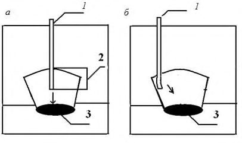
Рисунок 13.1 - Схемы механического взаимодействия свай с карстовыми полостями
Проект геотехнических противокарстовых мероприятий должен предусматривать исключение карстовых проявлений как в основании свайного фундамента, так и по всей площади условного свайного фундамента.
АПриложение А. Методика оценки конструктивной и экономической эффективности технических решений фундаментных конструкций
А.1 Оценка эффективности фундаментных конструкций выполняется в следующей последовательности:
- определение требований по конструктивным показателям обеспечения механической/конструктивной безопасности объекта;
- определение нагрузки на основание, отдельный элемент свайного фундамента (свая, ячейка/участок свайного фундамента);
- определение возможных вариантов фундаментов с учетом нагрузки и инженерно-геологических условий площадки.
- А.2 Назначение критериев конструктивной эффективности и определение соответствующих частных коэффициентов конструктивной эффективности для вариантов фундаментных конструкций
В качестве критериев конструктивной эффективности используют показатели, определяемые расчетами по предельным состояниям первой и второй групп:
- несущую способность сваи по грунту;
- несущую способность сваи по материалу;
- осадку свайного фундамента/сваи;
- показатели неравномерности осадок (относительная разность осадок, крен).
После выбора критериев конструктивной эффективности для возможных вариантов свайных фундаментов определяют частные коэффициенты конструктивной эффективности (таблица А.1).
Таблица А.1 -Определение частных коэффициентов конструктивной эффективности
| Критерий конструктивной эффективности | Требуемое или предельное значение | Частный коэффициент конструктивной эффективности К i ( К i ≥ 1) |
|---|---|---|
| 1 Несущая способность по грунту F d сваи/свайного основания | F d ,треб | К 1 = F d /F d, треб |
| 2 Несущая способность по материалу F m сваи/свайного основания | F m ,треб | К 2 = F m /F m, треб |
| 3 Осадка сваи/фундамента S | S пред | К 3 = 2 - S/S пред |
| 4 Относительная разность осадок свайного фундамента ∆ S | ∆ S пред | К 4 = 2 - ∆ S /∆ S пред |
А.3Определение коэффициентов конструктивной эффективности К к.э для каждого варианта фундаментных конструкций
В зависимости от требований, предъявляемых к объекту, обобщенный коэффициент эффективности по конструктивным требованиям для каждого варианта фундамента определяют по таблице А.1 - произведение частных коэффициентов конструктивной эффективности
Наиболее эффективным по конструктивным требованиям принимают вариант, имеющий наибольшее значение коэффициента Кк.э.
Частный коэффициент Кi ( i = 1...4) для пунктов 1-4 таблицы А.1 и соответственно обобщенный коэффициент К к.э должны удовлетворять условию
При оценке вариантов следует принимать технические решения, реально осуществимые с точки зрения исполнения на данном объекте.
Определение коэффициентов экономической эффективности К э.э для каждого варианта фундаментных конструкций выполняют по формуле
где Пус,макс - максимальное значение удельной стоимости фундаментных конструкций для рассматриваемых вариантов;
Пус,в - значение удельной стоимости фундаментных конструкций для каждого варианта.
Показатель удельной стоимости усиления Пус (Пус,макс или Пус,в), руб./кН, определяют по формуле
где С - значение обобщенной стоимости работ по устройству свайного фундамента или стоимость работ по устройству элемента свайного фундамента для одного из вариантов, руб.;
N - значение обобщенной нагрузки на свайный фундамент или элемент свайного фундамента, принятый для сравнения вариантов, кН.
Обобщенная стоимость работ по рассматриваемым при проектировании вариантам или стоимость работ по устройству элемента свайного фундамента может быть определена по объектам-аналогам или единичным расценкам на производство работ.
Наиболее эффективным по экономическим требованиям принимают вариант, имеющий большее значение коэффициента экономической эффективности К э.э .
А.4Определение интегральных коэффициентов эффективности и окончательный выбор варианта фундаментных конструкций
По значениям коэффициентов конструктивной и экономической эффективности выполняют оценку эффективности по интегральному коэффициенту эффективности К и для оцениваемых вариантов по формуле
Наиболее эффективным принимают вариант с бóльшим значением коэффициента К и .
БПриложение Б. Расчет свай на совместное действие вертикальной и горизонтальной сил и момента
Б.1 Расчет должен включать в себя проверку сечений свай по предельным состояниям первой и второй групп. При проведении расчетов сооружений категории КС-3 рекомендуется преимущественно использовать компьютерные программы, описывающие механическое взаимодействие свай и прилегающего грунтового массива в нелинейной постановке. При этом расчеты должны проходить обязательную верификацию с результатами расчета по Б.4-Б.8. Для сооружений категорий КС-1 и КС-2 допускается применение расчетных схем, описывающих взаимодействие балки и упругого основания (балка на упругом основании с переменным коэффициентом постели).
Расчет свай, свай-оболочек и свай-столбов (далее - сваи) на совместное действие вертикальных и горизонтальных нагрузок и моментов допускается проводить в соответствии со схемой, приведенной на рисунке Б.1.
Примечание - При расчете опор мостов во всех случаях допускается применение зависимостей, приведенных в Б.4-Б.8.
Рисунок Б.1 - Схема нагрузок на сваю
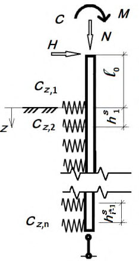
Б.2 Расчет по предельному состоянию первой группы должен включать в себя проверку сечений свай по прочности, по образованию и раскрытию трещин на совместное действие расчетных усилий: сжимающей силы, изгибающего момента и перерезывающей силы. Указанный расчет сваи должен выполняться в зависимости от материала свай в соответствии с разделом 7.
Б.3 Расчет по предельному состоянию второй группы сводится к проверке соблюдения условий допустимости расчетных значений горизонтального перемещения голов свай и угла их поворота:
где up , ψ р -расчетные значения соответственно горизонтального перемещения головы сваи, м, и угла ее поворота, рад; uu , ψ u -предельные допустимые значения соответственно горизонтального перемещения головы сваи, м, и угла ее поворота, рад.
Значения uu и ψ u должны задаваться в проекте из условия нормальной эксплуатации проектируемых строительных конструкций сооружения.
Б.4 При расчете свай и свайных кустов с применением компьютерных программ, реализующих модели сплошной среды, по боковой поверхности свай следует вводить интерфейсные элементы. Свойства интерфейсных элементов должны назначаться с учетом коэффициента условий работы сваи γ R,f по таблице 7.6.
Б.5 Расчеты по определению прочности свай всех видов при применении упрощенных расчетных схем следует проводить с учетом формулы (7.1) с коэффициентом деформации αε, 1/м, определяемым по формуле
где Е - модуль упругости материала сваи, кПа (тс/м² );
I - момент инерции поперечного сечения сваи, м 4 ; bр - условная ширина сваи, м, принимаемая равной: для свай диаметром стволов 0,8 м и более bр = d + 1, а для остальных размеров сечений свай bр = 1,5 d + 0,5, м; d - наружный диаметр круглого или сторона квадратного, или сторона прямоугольного сечения свай в плоскости, перпендикулярной к действию нагрузки, м.
Б.6 При применении в расчетах свай на горизонтальную нагрузку схемы балки на упругом основании принимается, что значение коэффициента постели линейно растет с глубиной. Расчетные значения коэффициента постели сz грунта на боковой поверхности сваи допускается определять по формуле
где K - коэффициент пропорциональности, кН/м 4 (тс/м 4 ), принимаемый в зависимости от вида грунта, окружающего сваю, по таблице Б.1; z - глубина расположения сечения сваи в грунте, м, для которой определяется коэффициент постели, по отношению к поверхности грунта при высоком ростверке или к подошве ростверка при низком ростверке; γ сz - коэффициент условий работы (γ сz = 1).
Таблица Б.1
| Вид и характеристика грунта, окружающего сваи | Коэффициент пропорциональности K , кН/м 4 (тс/ м 4 ) |
|---|---|
| Пески крупные (0,55 ≤ е ≤ 0,7); глины и суглинки твердые ( I L < 0) | 6000 - 10000 (600 - 1000) |
| Пески мелкие (0,6 ≤ е ≤ 0,75); пески средней крупности (0,55 ≤ е ≤ 0,7), супеси твердые ( I L < 0); глины и суглинки тугопластичные и полутвердые (0 ≤ I L ≤ 0,5) | 4000 - 6000 (400 - 600) |
| Пески пылеватые (0,6 ≤ е ≤ 0,8); супеси пластичные (0 ≤ I L ≤ 0,75); глины и суглинки мягкопластичные (0,5 ≤ I L ≤ 0,75) | 2350 - 4000 (235 - 400) |
| Глины и суглинки текучепластичные (0,75 ≤ I L ≤ 1) | 1350 - 2350 (135 - 235) |
| Пески гравелистые (0,55 ≤ е ≤ 0,7); крупнообломочные грунты с песчаным заполнителем | 16750 - 33350 (1675 - 3335) |
Примечание - Меньшие значения коэффициента К соответствуют более высоким значениям показателя текучести IL глинистых грунтов и коэффициентов пористости у песчаных грунтов, а большие значения коэффициента К - соответственно более низким значениям.
Для грунтов с промежуточными значениями характеристик и IL и e значения коэффициента К определяются интерполяцией.
При расчете одиночных свай на действие горизонтальной нагрузки допускается пользоваться схемой, включающей дискретные опоры с постоянным шагом. Схема для проведения таких расчетов приведена на рисунке Б.2, а . При этом шаг опор должен составлять не более 0,25 м. Жесткость одной опоры определяется формулой
где K ( z ) - значение коэффициента пропорциональности в зависимости от слоя грунта; hi * - шаг пружинных опор в принятой расчетной схеме.
Схема для расчета свайных кустов приведена на рисунке Б.2, б . При проведении расчетов следует учитывать податливость опор от действия вертикальных нагрузок. Жесткость свай при расчете на вертикальную нагрузку следует определять в соответствии с 7.4.4. Значение α i должно определяться по Б.7. а а - схема расчета одиночной сваи; б - схема для расчета свай в составе куста
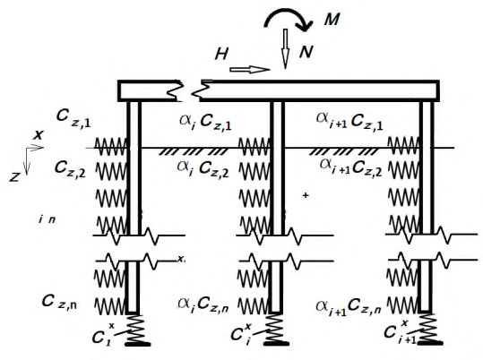
Рисунок Б.2 - Схемы для расчета свай
- Б.7 При статическом расчете свай в составе куста рекомендуется учитывать их взаимодействие. В этом случае допускается проводить расчет как для одиночной сваи, но коэффициент пропорциональности K умножается на понижающий коэффициент α i , определяемый по формуле
где γ c,с - коэффициент, учитывающий уплотнение грунта при погружении свай и принимаемый: γ с,с = 1,2 для забивных свай сплошного сечения и γ с,с = 1 для остальных видов свай; d - диаметр или сторона поперечного сечения сваи, м;
где xi , уi - координаты оси iй сваи в плане, причем горизонтальная нагрузка приложена в направлении оси х ; xj , yj - то же, для j -й сваи.
Произведение i j в формуле (Б.6) распространяется только на сваи куста, непосредственно примыкающие к i -й свае.
Примечания
1 Для опор мостов в случаях, если rij ≤ 3,0 d , или поле свай несимметрично, или при наличии в составе опоры наклонных свай, коэффициент α i допускается принимать равным 1,0.
2 Значение понижающего коэффициента α i для кустов из забивных свай допускается определять по таблице Б.2.
Таблица Б.2
| Число свай в | Значения коэффициента взаимовлияния свай α i при шаге свай, равном | Значения коэффициента взаимовлияния свай α i при шаге свай, равном | Значения коэффициента взаимовлияния свай α i при шаге свай, равном | Значения коэффициента взаимовлияния свай α i при шаге свай, равном |
|---|---|---|---|---|
| группе n | 3 d | 4 d | 5 d | 6 d |
| 3 | 0,649 | 0,737 | 0,813 | 0,881 |
| 4 | 0,626 | 0,713 | 0,800 | 0,858 |
| 6 | 0,585 | 0,673 | 0,751 | 0,821 |
| 9 | 0,539 | 0,628 | 0,708 | 0,781 |
| 12 | 0,504 | 0,596 | 0,678 | 0,755 |
| 16 | 0,470 | 0,566 | 0,654 | 0,736 |
| 20 | 0,446 | 0,546 | 0,640 | 0,729 |
- Б.8 Возможность применения линейных зависимостей при расчете свай должна проверяться по условию ограничения расчетного давления σ z , оказываемого на грунт боковыми поверхностями свай
- где σ z - расчетное давление на грунт, кПа (тс/м² ), боковой поверхности сваи на глубине z , м, отсчитываемой при высоком ростверке от поверхности грунта, а при низком ростверке - от его подошвы [при αε l ≤ 2,5 - на двух глубинах, соответствующих z = l /3 и z = l ; при αε l > 2,5 - на глубине z = 0,85/αε, где αε определяется по формуле (Б.4)];
- γI -расчетный удельный (объемный) вес грунта ненарушенной структуры, кН/м³ (тс/м³ ), определяемый в водонасыщенных грунтах с учетом взвешивания в воде;
- φI, с I - расчетные значения соответственно угла внутреннего трения грунта, град, и удельного сцепления грунта, кПа (тс/м² );
- ξ - коэффициент, принимаемый для забивных свай и свай-оболочек ξ = 0,6, а для всех остальных видов свай ξ = 0,3;
- η1 - коэффициент, равный единице, кроме случаев расчета фундаментов распорных сооружений, для которых η1 = 0,7;
- η2 - коэффициент, учитывающий долю постоянной нагрузки в суммарной нагрузке, определяемый по формуле
- где Мс - момент от внешних постоянных нагрузок в сечении фундамента на уровне условной заделки на глубине l 1 по формуле (7.1), кН∙м (тс∙м);
M 1 - то же, от внешних временных расчетных нагрузок, кН∙м (тс∙м);
- n ̅ - коэффициент, принимаемый n ̅ = 2,5, за исключением случаев расчета:
- а) особо ответственных сооружений, для которых при αε l ≤ 2,6 принимается n ̅ = 4 и при α ε l ≥ 5 принимается n ̅ = 2,5; при промежуточных значениях αε l значение n ̅ определяется интерполяцией; б) фундаментов с однорядным расположением свай на внецентренно приложенную вертикальную сжимающую нагрузку, для которых следует принимать n ̅ = 4 независимо от значения αε l .
Примечание - Если расчетные горизонтальные давления на грунт σ z не удовлетворяют условию (Б.7), но при этом несущая способность свай по материалу недоиспользована и перемещения свай меньше предельно допускаемых значений, то при приведенной глубине свай αε l > 2,5 расчет следует повторять, приняв уменьшенное значение жесткости опоры в сооответствии с формулой (Б.10). Расчет следует повторять до тех пор, пока условие (Б.7) выполнится во всех точках.
где c z,i * - скорректированное значение жесткости опоры.
ВПриложение В. Расчет несущей способности пирамидальных свай с наклоном боковых граней ip > 0,025
Несущую способность Fd , кН, пирамидальных свай с наклоном боковых граней i p > 0,025 допускается определять как сумму сил расчетных сопротивлений грунта основания на боковой поверхности сваи и под ее нижним концом по формуле
где Ai - площадь боковой поверхности сваи в пределах iго слоя грунта, м² ; α - угол конусности сваи, град.; φI, i , c I, i - расчетные значения угла внутреннего трения, град., и сцепления, кПа, i -го слоя грунта; d - сторона сечения нижнего конца сваи, м; n 1 , п 2 - коэффициенты, значения которых приведены в таблице В.1.
Сопротивления грунта под острием сваи pi и на ее боковой поверхности p' i , кПа, определяют по формуле
где Ei - модуль деформации i -го слоя грунта, кПа, определяемый по результатам пресссиометрических испытаний; vi -коэффициент Пуассона i -го слоя грунта, принимаемый в соответствии с СП 22.13330; ξ - коэффициент, значения которого приведены в таблице В.1.
Давление грунта p 0, i , pp , i , кПа, определяют по формулам:
где γI, i - удельный вес i -го слоя грунта, кН/м³ ; hi - средняя глубина расположения i -го слоя грунта, м.
Таблица В.1
| Значения угла внутреннего трения грунта φ I, i | Значения угла внутреннего трения грунта φ I, i | Значения угла внутреннего трения грунта φ I, i | Значения угла внутреннего трения грунта φ I, i | Значения угла внутреннего трения грунта φ I, i | Значения угла внутреннего трения грунта φ I, i | Значения угла внутреннего трения грунта φ I, i | Значения угла внутреннего трения грунта φ I, i | Значения угла внутреннего трения грунта φ I, i | Значения угла внутреннего трения грунта φ I, i | |
|---|---|---|---|---|---|---|---|---|---|---|
| Коэффициент | 4° | 8° | 12° | 16° | 20° | 24° | 28° | 32° | 36° | 40° |
| n 1 | 0,53 | 0,48 | 0,41 | 0,35 | 0,30 | 0,24 | 0,20 | 0,15 | 0,10 | 0,06 |
| n 2 | 0,94 | 0,88 | 0,83 | 0,78 | 0,73 | 0,69 | 0,65 | 0,62 | 0,58 | 0,54 |
| ξ | 0,06 | 0,12 | 0,17 | 0,22 | 0,26 | 0,29 | 0,32 | 0,35 | 0,37 | 0,39 |
Примечание - Для промежуточных значений угла внутреннего трения φI, i значения коэффициентов n 1 , n 2 и ξ определяют интерполяцией.
ГПриложение Г. Расчет свайных фундаментов на воздействие сил морозного пучения
Г.1 При строительстве сооружений на свайных фундаментах в сезоннопромерзающих или искусственно замороженных пучинистых грунтах необходимо учитывать касательные силы морозного пучения. Расчет оснований и свайных фундаментов по устойчивости и прочности на воздействие сил морозного пучения грунтов следует выполнять при эксплуатации неотапливаемых сооружений, мачт ЛЭП и мобильной связи, трубопроводов и др. или при консервации сооружений, а также для условий периода строительства, если до передачи на сваи проектных нагрузок возможно промерзание грунтов слоя сезонного промерзания-оттаивания или выполняется искусственное замораживание грунтов (при строительстве метро или эксплуатации помещений с отрицательной температурой). При необходимости в проекте должны быть предусмотрены мероприятия по предотвращению выпучивания свай в период строительства.
Г.2 Устойчивость свайных фундаментов на действие касательных сил морозного пучения грунтов следует проверять по условию
где fh - расчетная удельная касательная сила пучения, кПа, принимаемая согласно Г.3;
Afh - площадь боковой поверхности смерзания сваи в пределах расчетной глубины сезонного промерзания-оттаивания грунта или слоя искусственно замороженного грунта, м² ;
F - расчетная нагрузка на сваю, кН, принимаемая с коэффициентом 0,9 по наиболее невыгодному сочетанию нагрузок и воздействий, включая выдергивающие (ветровые, крановые и т. п.);
Frf - расчетное значение силы, удерживающей сваю от выпучивания вследствие трения ее боковой поверхности о талый грунт, лежащий ниже расчетной глубины промерзания, кН, принимаемое по Г.4;
c - коэффициент условий работы, принимаемый равным 1,0;
k - коэффициент надежности, принимаемый равным 1,1.
Г.3 Расчетную удельную касательную силу морозного пучения fh , кПа, следует определять, как правило, опытным путем, в полевых условиях, в соответствии с ГОСТ 27217, или в лабораторных условиях в соответствии с ГОСТ Р 56726. Поверхность или покрытие, в том числе термоусаживаемые оболочки, моделей сваи должны быть аналогичными поверхности и покрытию натурной сваи. Расчетную касательную силу морозного пучения, полученную по результатам лабораторных испытаний, следует определять в соответствии с СП 25.13330. При отсутствии опытных данных допускается принимать значение fh по таблице Г.1 в зависимости от вида и характеристик грунта.
- Г.4 Расчетное значение силы Frf , кН, удерживающей сваи от выпучивания, следует определять по формуле
где u - периметр сечения поверхности сдвига, м, принимаемый равным периметру сечения сваи;
- f i -расчетное сопротивление i -го слоя талого грунта сдвигу по поверхности сваи, кПа, принимаемое по таблице 7.3;
- hi - толщина i -го слоя талого грунта, расположенного ниже подошвы слоя промерзания-оттаивания, м.
- Г.5 При проектировании свайных фундаментов с ростверками на среднеи сильнопучинистых грунтах следует учитывать действие нормальных сил морозного пучения грунтов на подошву ростверков согласно СП 25.13330.
Г.6Расчет отрицательной силы трения оттаивающих грунтов на сваи
При оттаивании сезонномерзлых или искусственно замороженных грунтов происходит их оседание, в результате чего на боковую поверхность свай действуют отрицательные (негативные) силы трения, направленные вертикально вниз.
Отрицательную (негативную) силу трения оттаивающего грунта по боковой поверхности сваи можно определять по формуле
где up - периметр поперечного сечения сваи, м; f n,i - отрицательное трение i -го слоя оттаивающего грунта по боковой поверхности сваи, кПа, определяемое по опытным данным; допускается принимать расчетные значения f n,i по таблице 7.3; hi - толщина i -го слоя оттаивающего грунта.
Таблица Г.1
| Вид и характеристика грунта | Значения fh , кПа, при глубине сезонного промерзания-оттаивания d th , м | Значения fh , кПа, при глубине сезонного промерзания-оттаивания d th , м | Значения fh , кПа, при глубине сезонного промерзания-оттаивания d th , м |
|---|---|---|---|
| До 1,5 | 2,5 | 3,0 и более | |
| Супеси, суглинки и глины при показателе текучести I L > 0,5, крупнообломочные грунты с глинистым заполнителем, пески мелкие и пылеватые при показателе дисперсности D > 5 и степени влажности S r > 0,95 | 110 | 90 | 70 |
| Супеси, суглинки и глины при 0,25 < I L 0,5, крупнообломочные грунты с глинистым заполнителем, пески мелкие и пылеватые при D > 1 и степени влажности 0,8 < S r 0,95 | 90 | 70 | 55 |
| Супеси, суглинки и глины при I L 0,25, крупнообломочные грунты с глинистым заполнителем, пески мелкие и пылеватые при D > 1 и степени влажности 0,6 < S r 0,8 | 70 | 55 | 40 |
Примечания
1 Для промежуточных глубин промерзания fh принимается интерполяцией.
2 Значения fh для грунтов, используемых при обратной засыпке котлованов, принимается по первой строке таблицы.
3 В зависимости от вида поверхности фундамента приведенные значения fh умножают на коэффициент: при гладкой бетонной необработанной - 1; при шероховатой бетонной с выступами и кавернами до 5 мм 1,1-1,2, до 20 мм - 1,25-1,5; при деревянной антисептированной - 0,9; при металлической без специальной обработки - 0,8 (без учета 7.2.20). При применении противопучинистых обмазок или покрытий, в том числе термоусаживаемых оболочек, коэффициент определяется опытным путем по ГОСТ Р 56726.
4 Для сооружений класса КС-1 значения fh умножают на коэффициент 0,9.
ДПриложение Д. Расчеты несущей способности свай, взаимодействующих со скальными грунтами по боковой поверхности
Д.1 Несущая способность Fd набивной, буровой сваи и сваи-оболочки, заполняемой бетоном, прорезающей толщу невыветрелых скальных грунтов, определяется с учетом расчетного сопротивления грунтов основания на ее боковой поверхности (рисунки Д.1, Д.2).
Q - вертикальная нагрузка на сваю; Qs - реакция от вертикальной нагрузки, воспринимаемой боковой поверхностью сваи, Q = Qs ; h 1 , h 2 , ..., hn -толщины слоев скального грунта
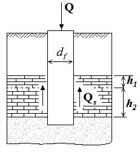
Рисунок Д.1 - Прорезание сваей толщи скальных грунтов без обеспечения заделки
Рисунок Д.2 - Прорезание сваей толщи скальных грунтов с заделкой в них
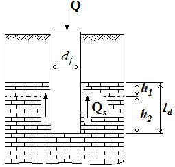
В случае прорезания значительной толщи скальных грунтов вклад сопротивления грунта на боковой поверхности сваи может составить до 90 % полной нагрузки, воспринимаемой сваей. В этом случае допускается принимать
где Fds - несущая способность сваи с учетом только сопротивления скальных грунтов на ее боковой поверхности, определяемая по формуле
где u - наружный периметр поперечного сечения ствола сваи, м;
Rsi - расчетное сопротивление i -го слоя скального грунта на боковой поверхности сваи, кПа; hi - толщина i -го слоя скального грунта, соприкасающегося с боковой поверхностью сваи, м.
Расчетное сопротивление Rsi слоя скального грунта на боковой поверхности сваи определяется по формуле
где pa = 100 кПа;
Rci -расчетное значение предела прочности на одноосное сжатие i -го слоя скального грунта в водонасыщенном состоянии, кПа.
Д.2 Для учета расчетного сопротивления массива скального грунта как под нижним концом сваи, так и на ее боковой поверхности, следует определять соотношение вертикальных нагрузок на сваю, воспринимаемых пятой сваи Qb и ее боковой поверхностью Qs (рисунок Д.3). Величины указанных долей нагрузок рекомендуется определять численными методами с применением программ, описывающих взаимодействие свай и грунтового основания с учетом залегания скальных грунтов. При этом расчетные прочностные характеристики скальных грунтов допускается определять в соответствии с СП 23.13330 в зависимости от значения предела прочности образца скального грунта на одноосное сжатие Rc . По результатам численного моделирования определяется доля η от общей нагрузки Q , воспринимаемая пятой сваи (η = Qb / Q ), и доля 1-η, воспринимаемая боковой поверхностью сваи (1-η = Qs / Q ).
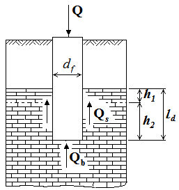
Q - вертикальная нагрузка на сваю; Qb - реакция от вертикальной нагрузки, воспринимаемой пятой сваи, Qb / Q = η; Qs - реакция от вертикальной нагрузки, воспринимаемой боковой поверхностью сваи, Qs / Q = 1 - η
Рисунок Д.3 - Совместная работа нижнего конца сваи и боковой поверхности
Несущая способность Fd сваи с учетом расчетного сопротивления массива скального грунта как под нижним концом сваи, так и на ее боковой поверхности, принимается как наименьшее из двух значений, удовлетворяющим неравенствам:
в этом случае несущая способность сваи ограничена сопротивлением скального массива под ее нижним концом, или
в этом случае несущая способность сваи ограничена сопротивлением на ее боковой поверхности.
Примечание - При определении величины Fd простое суммирование несущей способности под пятой сваи Fdb [формула (7.5)] и на ее боковой поверхности Fds [формула (Д.2)] без учета значения η не допускается, поскольку может приводить к завышенной величине расчетной несущей способности.
За расчетную величину несущей способности сваи Fd принимается наибольшее значение из трех величин, определенных:
- несущей способностью основания под нижним концом сваи Fdb [формула (7.5)];
- несущей способностью сваи с учетом сопротивления скальных грунтов на ее боковой поверхности Fds [формула (Д.2)];
- несущей способностью с учетом сопротивления массива скального грунта как под нижним концом сваи, так и на ее боковой поверхности [формулы (Д.4), (Д.5)].